Linux5.10.160_User’s Manual_V1.0
Document classification: □ Top secret □ Secret □ Internal information ■ Open
Copyright
The copyright of this manual belongs to Baoding Folinx Embedded Technology Co., Ltd. Without the written permission of our company, no organizations or individuals have the right to copy, distribute, or reproduce any part of this manual in any form, and violators will be held legally responsible.
Forlinx adheres to copyrights of all graphics and texts used in all publications in original or license-free forms.
The drivers and utilities used for the components are subject to the copyrights of the respective manufacturers. The license conditions of the respective manufacturer are to be adhered to. Related license expenses for the operating system and applications should be calculated/declared separately by the related party or its representatives.
1. OK3568 Development Board Description
The RK3568 is a low-power, high-performance processor based on the ARM64 architecture. It features a quad-core Cortex-A55 CPU, an independent NEON coprocessor, and a Neural Network Processor Unit (NPU), making it suitable for applications in computers, smartphones, personal mobile internet devices, and digital multimedia equipment.
Connection method: Stamp hole. The main interfaces are shown in the figure below:
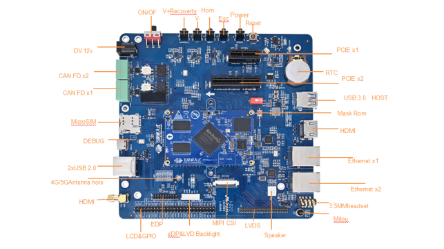
Front
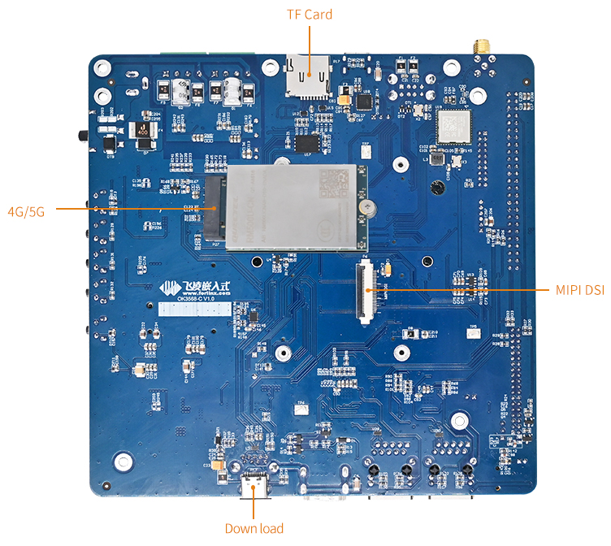
Back
Note:
This software manual does not provide a description of the hardware parameters. Before using this manual for software development, please refer to the “OK3568-UP4 Hardware Manual” . It will help you understand the product naming conventions and the hardware configuration information of the product you are using, which will assist you in using this product effectively.
1.1 Linux 5.10.160 System Software Resources
Device |
Driver Source Code Location in the Kernel |
Device Name |
|---|---|---|
LCD Backlight Driver |
drivers/video/backlight/pwm_bl.c |
/sys/class/backlight |
USB Interface: |
drivers/usb/storage/ |
|
USB Mouse |
drivers/hid/usbhid/ |
/dev/input/mice |
Ethernet |
drivers/net/ethernet/stmicro/stmmac |
|
SD/micro TF card driver |
drivers/mmc/host/dw_mmc-rockchip.c |
/dev/block/mmcblk1pX |
EMMC Driver |
drivers/mmc/host/dw_mmc-rockchip.c |
/dev/block/mmcblk2pX |
OV13850 |
drivers/media/i2c/ov13850.c |
/dev/videoX |
LCD controller |
drivers/gpu/drm/rockchip/rockchip_drm_vop.c |
|
MIPI CSI |
drivers/phy/rockchip/phy-rockchip-mipi-rx.c |
|
MIPI DSI |
drivers/phy/rockchip/phy-rockchip-inno-mipi-dphy.c |
|
LCD touch driver |
drivers/input/touchscreen/gt9xx/* |
/dev/input/eventX |
RTC Real - Time Clock |
drivers/rtc/rtc-rx8010.c |
/dev/rtc0 |
Serial Port |
drivers/tty/serial/8250/8250_dw.c |
/dev/ttySX |
Button driver |
drivers/input/keyboard/adc-keys.c |
/dev/input/eventX |
LED |
drivers/leds/leds-gpio.c |
|
I2S |
sound/soc/rockchip/rockchip_i2s.c |
|
Audio Driver |
sound/soc/codecs/rk817_codec.c |
/dev/snd/ |
PMIC |
drivers/mfd/rk808.c |
|
PCIE |
drivers/pci/controller/pcie-rockchip.c |
|
Watchdog |
drivers/watchdog/dw_wdt.c |
|
SPI |
drivers/spi/spi-rockchip.c |
1.2 eMMC Storage Partition Table
The table below details the eMMC storage partition information for the Linux operating system (The size of a block is 512 bits when calculating.):
Partition Index |
Name |
Offset/Block |
Size/Block |
Content |
|---|---|---|---|---|
N/A |
loader |
0x00000000 |
0x00003fc0 |
MiniLoaderAll.bin |
1 |
uboot |
0x00004000 |
0x00002000 |
uboot.img |
2 |
misc |
0x00006000 |
0x00002000 |
misc.img |
3 |
boot |
0x00008000 |
0x00020000 |
boot.img |
4 |
recovery |
0x00028000 |
0x00040000 |
recovery.img |
5 |
backup |
0x00068000 |
0x00010000 |
backup.img |
6 |
rootfs |
0x00078000 |
0x00c00000 |
rootfs.img |
7 |
oem |
0x00c78000 |
0x00040000 |
oem.img |
8 |
userdata |
0x00cb8000 |
Remaining Space |
userdata.img |
Use the fdisk -l command on the development board to see the partition size:
root@OK3568-buildroot:/# fdisk –l
Found valid GPT with protective MBR; using GPT
Disk /dev/mmcblk0: 15269888 sectors, 3360M
Logical sector size: 512
Disk identifier (GUID): b0640000-0000-493c-8000-1e08000019fe
Partition table holds up to 128 entries
First usable sector is 34, last usable sector is 15269854
Number Start (sector) End (sector) Size Name
1 16384 24575 4096K uboot
2 24576 32767 4096K misc
3 32768 163839 64.0M boot
4 163840 425983 128M recovery
5 425984 491519 32.0M backup
6 491520 13074431 6144M rootfs
7 13074432 13336575 128M oem
8 13336576 15269854 943M userdata
2. Fast Startup
2.1 Preparation Before Startup
12V2A or 12V/3A DC power cable
Debug port cable
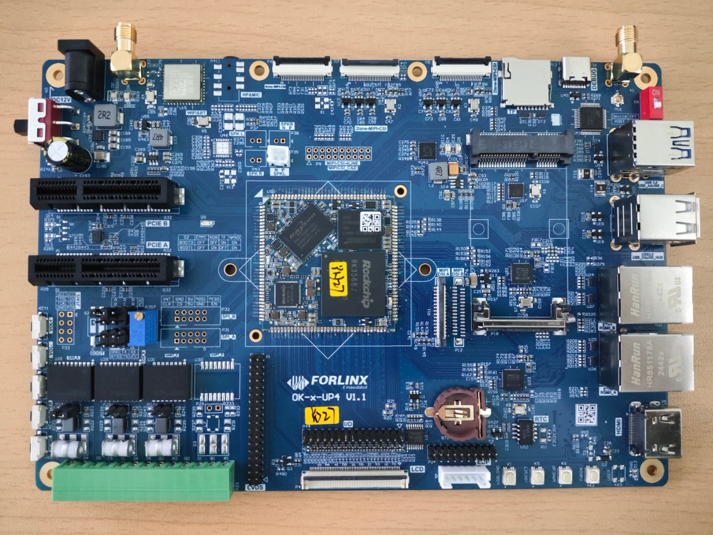
2.2 Debugging Serial Port Driver Installation
The OK3568-S platform features a Type-C port for serial debugging and an onboard USB-to-UART chip. No additional USB-to-serial debugging tool is required, making the setup simple and convenient.
To install the driver, please use the package provided in the user documentation under the Linux\Tools\ directory: XR21x141x-XPVista78-DriversOnly-Vers2.0.0.0.
After extracting the package:
On a 32-bit operating system, open the x86 folder, right-click on xr21v141x.inf, and select Install.
On a 64-bit operating system, open the x64 folder, right-click on xr21v141x.inf, and select Install.
2.3 Serial Port Login
2.3.1 Serial Connection Settings
Note:
The serial terminal automatically logs in as the root user without a password;
Settings: Baud rate 115200, 8 data bits, 1 stop bit, no parity/flow control;
Hardware Requirements: Type-C for connecting PC and development board;
Software Requirements:
A serial terminal application must be installed on the PC Windows. There are various terminal programs available, and you may choose any one you are familiar with.
Take putty as an example to introduce the setting mode of the putty terminal:
Step1: Identify the serial port number assigned to the PC. In Device Manager, locate the serial port with the name ending in “Ch A”, which corresponds to the actual debug UART. For example, this may appear as COM51; the port number should be based on the actual one detected by the system.
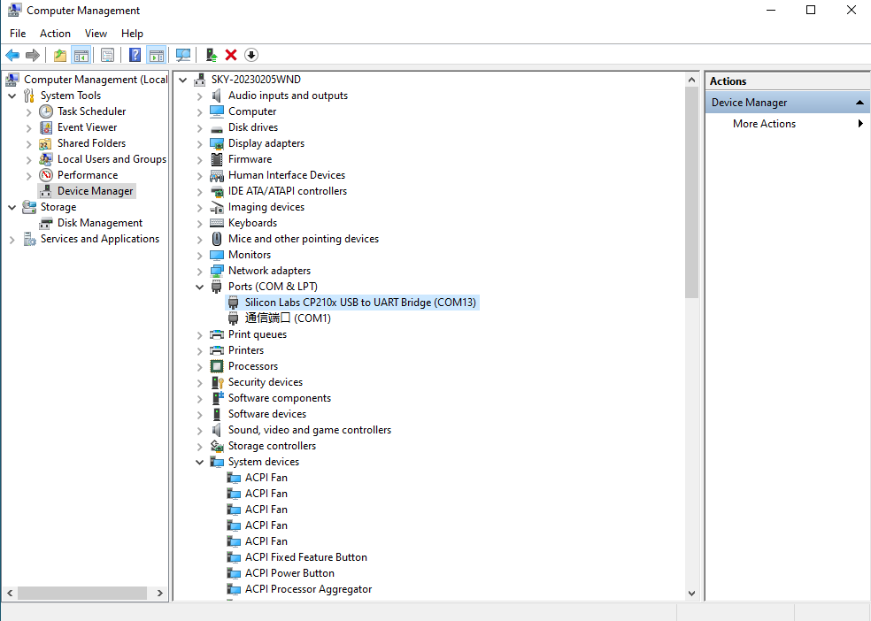
Step2: Open the putty and set the serial line according to the com port of the computer used. The baud rate is 115 200.
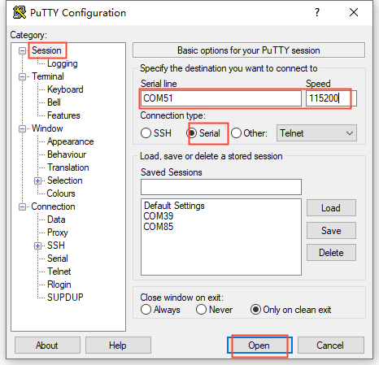
Step 3: After completing the above settings, the COM port used by the PC can be entered in Saved Sessions. The following figure uses COM51 as an example to save the settings. Then, when opening the serial port, simply click the saved port number.
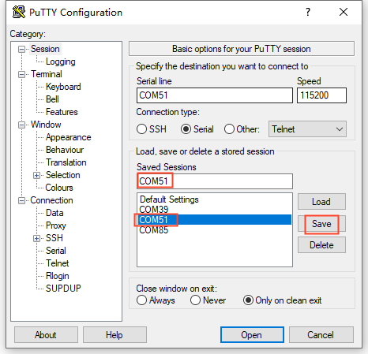
2.3.2 Serial Port Login
After setting up the PC terminal software, connect the serial cable between the PC and the development board, and power up by connecting the power supply. Startup information can be viewed via the terminal software.
The following startup message indicates a successful start, allowing a new command line to be entered by pressing Enter:
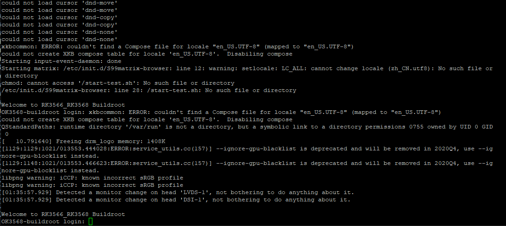
Note:
If the message shows [root@buildroot]#, it indicates the first reboot after the initial firmware flash. At this point, do not perform any operations; wait for it to reboot automatically. [root@OK3568-buildroot]# is the normal state. The U-Boot startup information can be used for verification.
First Boot, Recovery Mode:
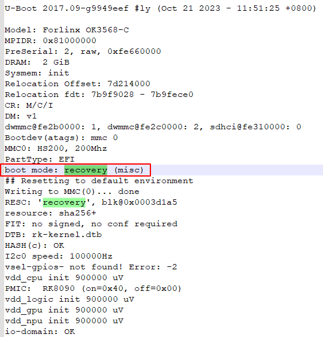
Normal Boot:
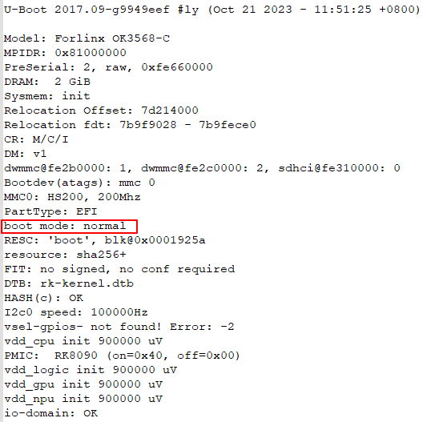
2.4 Network Login
In addition to using the debug UART for login, the OK3568 supports SSH network login to the development board, as well as FTP file transfer.. Take the development board IP 172.16.0.76 as an example to introduce the network tool. Modify the network IP using ifconfig eth0 172.16.0.76, and connect the development board and PC to the same switch or directly via an Ethernet cable.
2.4.1 SSH
The OK3568 development board supports SSH services, which are enabled automatically upon startup. Once the IP address is configured, the board can be used as an SSH server. SSH can be used for development debugging, and scp can be used for file transfer.
Note:
When logging in, enter the username “root” and password “root”. If you want to log in as the root user via SSH, you need to set a login password for the root user first. Log in to the main board via the serial port and use “passwd” user name to change the login password for the corresponding user. There will be a hint of password strength, which can be ignored and has no effect on password modification;
The following is tested with the development board IP 172.16.0.76. Please modify it according to the actual situation. Use ifconfig eth0 172.16.0.76 to change it in the debugging serial port terminal.
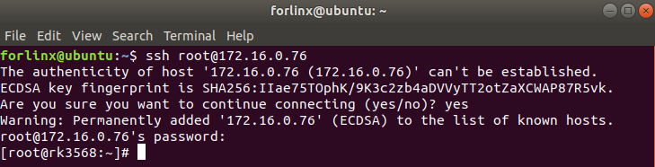
Open the putty software and make the following settings (the actual IP shall prevail):
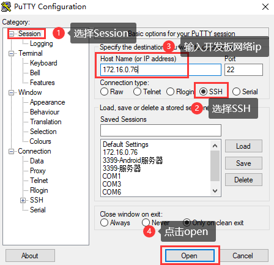
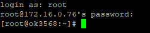
2.4.2 FTP
The OK3568 development board supports FTP services, which are enabled automatically upon startup. Once the IP address is configured, the board can be used as an FTP server. The following describes how to utilize the FTP tool for file transfer.
Path: OK3568-S (Linux) User Data\Tools\FileZilla*
Install the file Zilla tool on windows and set it up as shown in the following figure.
Note:
This feature requires the development board to be connected via an Ethernet cable, with the host IP address and client configured within the same subnet. Ensure both the host and client are on the same local network. Username: root, Password: root. After successful login, you can upload, download, and delete files anywhere within the file system. For security reasons, it is not recommended to log in with the root account via FTP. Please configure user logins according to your specific requirements;
The following is tested with the development board IP 172.16.0.76. Please modify it according to the actual situation. Use ifconfig eth0 172.16.0.76 to change it in the debugging serial port terminal.
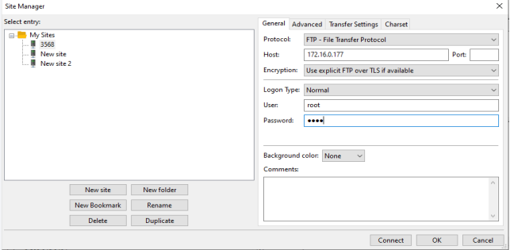
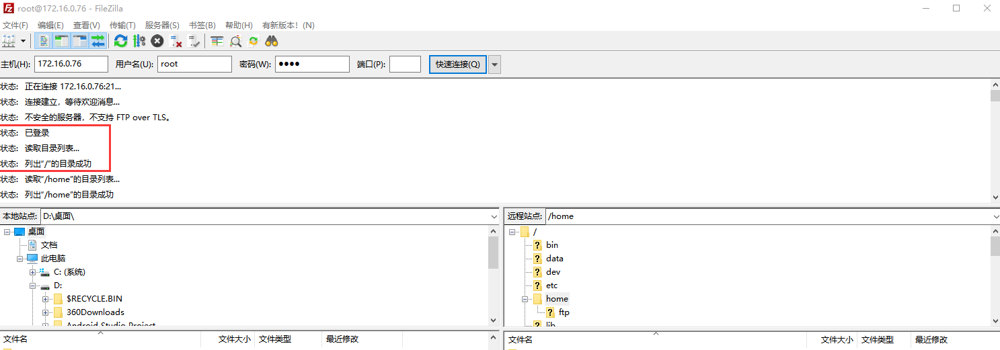
2.5 Screen Switch
The OK3568 supports various display interfaces including LVDS/LCD, MIPI DSI/eDP, and HDMI, and can simultaneously display content on up to three screens in either mirrored or extended mode. Currently, there are three methods for controlling screen switching: dynamic control via the U-Boot menu, specification via the kernel device tree, and U-Boot menu control in QT applications.
Note:
Screen switching is controlled via the touch screen. By default, the factory image outputs video to the LVDS, MIPI, and HDMI interfaces, with the touch functionality mapped to the LVDS screen. To enable touch functionality on the MIPI screen, the LVDS screen output must be disabled during the screen selection phase.
2.5.2 Kernel Device Tree Specification
This method does not require a serial terminal connection. The system image is configured with the default desired settings, making it suitable for mass production. However, manual modification of the device tree is required, followed by regeneration of the system image.
Note: This method takes precedence over the U-Boot screen selection. After modifying the device tree, the U-Boot screen selection will no longer be effective.
The device tree path is: kernel/arch/arm64/boot/dts/rockchip/OK-x-U40-common.dtsi
In the kernel source code, open the device DTSI file and locate the following node:
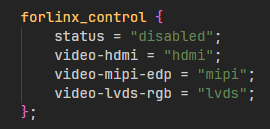
The node is disabled by default and needs to be changed to “okay” to enable it. Modify according to the screen requirements.
For example:
To disable HDMI and LVDS screens, change their property to “off”. For eDP, modify the corresponding property to “edp”.
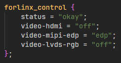
After saving, recompile to generate the image.
For MIPI screens, there are many types, and the existing timing and control words may not meet the requirements. You may need to manually modify the display-timings under the DSI node. However, any display-related node’s status property should be handled as per the default settings, as the program will automatically control it.
2.6 System Shutdown
In general, the power can be turned off directly, if there is data storage, function use and other operations, do not arbitrarily disconnect the power during the operation, in order to prevent irreversible damage to the file, you can only re-burn the firmware. To ensure all data is fully written, you can execute the sync command to complete data synchronization before powering off.
Note: For products based on the SoM design, if unexpected power loss occurs during use, leading to system shutdown issues, power loss protection measures can be incorporated into the design.
3. OK3568 Platform Functionality Testing
The OK3568-S platform provides excellent support for Qt, particularly for multimedia-related classes such as video decoding and playback, camera integration, video recording, etc. It achieves optimal performance by utilizing hardware encoding/decoding and OpenGL.
3.1 Interface Function Testing
3.1.1 Interface Function Overview
After booting, the development board will display the following desktop:
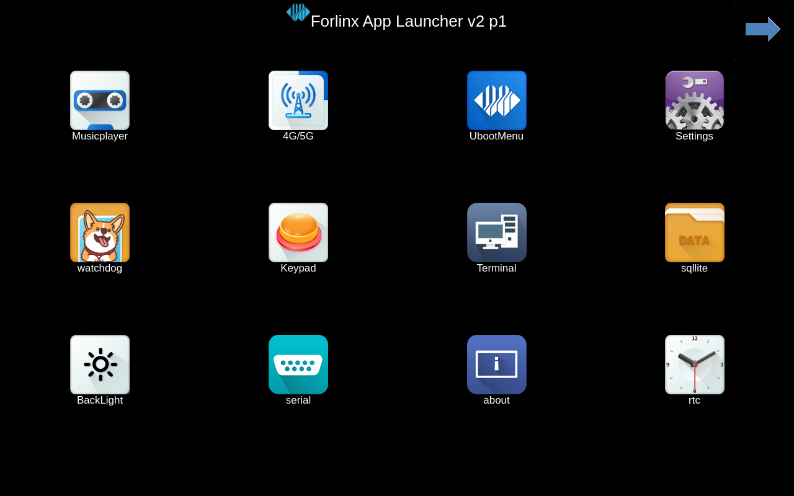
3.1.2 Touch Function Overview
When the development board is connected to LVDS and MIPI screens, both display and touch functionalities will work. If touch functionality for a specific display needs to be disabled, refer to “2.5.1 Dynamic Control via U-Boot Menu,” to turn off the corresponding display output.
3.1.3 Hardware Decoding Experience
Click the desktop icon to open the video player.
Application Icons
Application Interface
3.1.4 Camera Testing
Click the desktop icon to open the qcamera video player application. This test application supports both USB cameras and the OV5645 camera. Insert a USB camera, such as the RMONCAM 720P.
Note: The camera must be connected before opening the application.
Application Icons
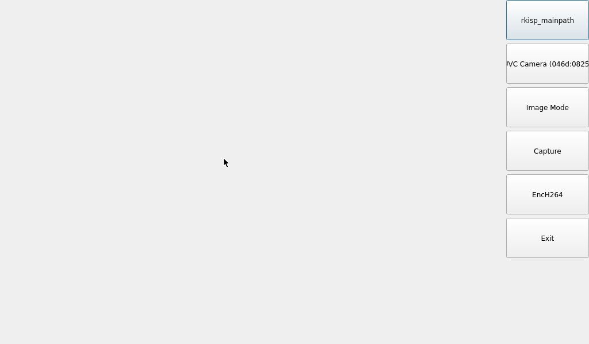
Application Interface
Once the application is opened, click UVC Camera to start the camera preview.
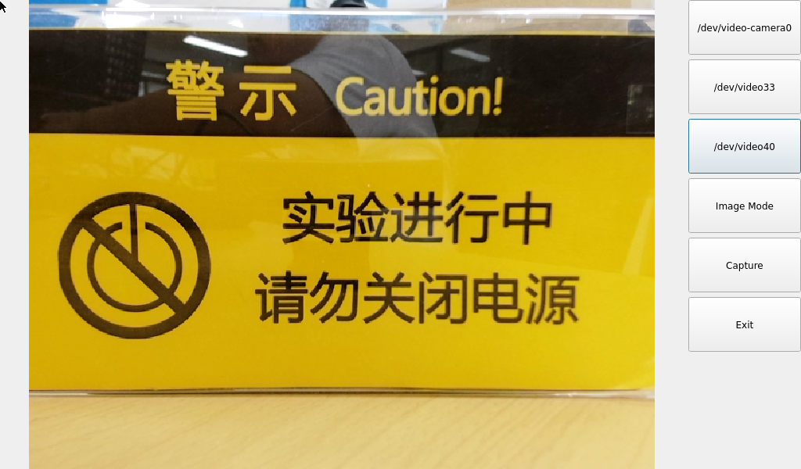
In Video Mode, click the record button to begin recording. To stop recording, click the recording button. The generated video file will be saved at /userdata/VIDEO0.MOV.
Playback testing can be done using the command: gst-play-1.0 /userdata/VIDEO0.mov.
Click the Video Mode button to switch to photo mode, then click Capture to take a photo.
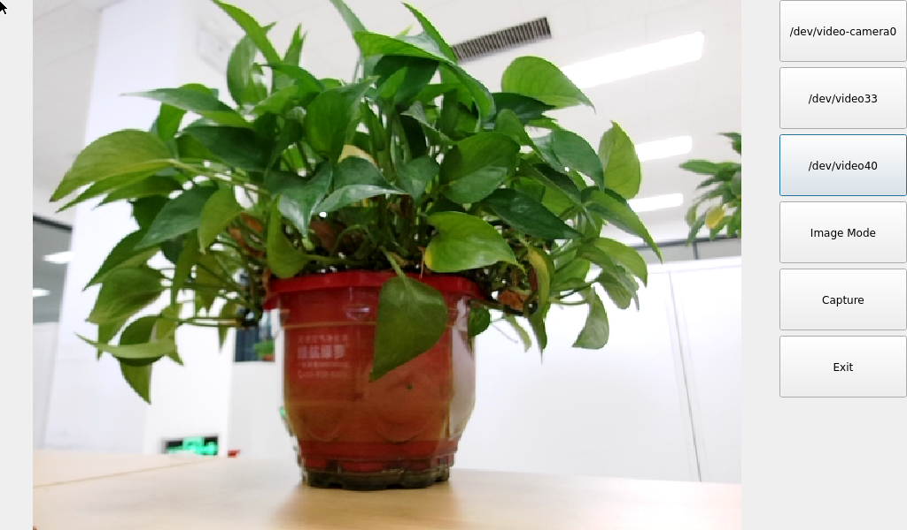
The generated files will be stored in the /userdata path.
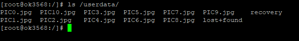
For sensors like the OV13850 and other raw sensors, each sensor corresponds to five device nodes:
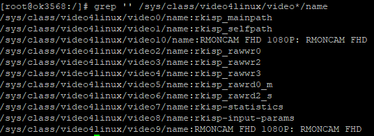
Mainpath: This is an output node from the Rockchip ISP capable of outputting full-resolution images, typically used for taking photos and capturing raw images.
Self Path: This is another output node from the Rockchip ISP that can output up to 1080p resolution, typically used for previewing.
Statistics: This node is used for 3A statistics.
Input-params: This node is used for setting 3A parameters.
3.1.5 OpenGL Test
OK3568 supports OpenGL ES3.2, click the desktop icon for OpenGL testing.
Application Icons
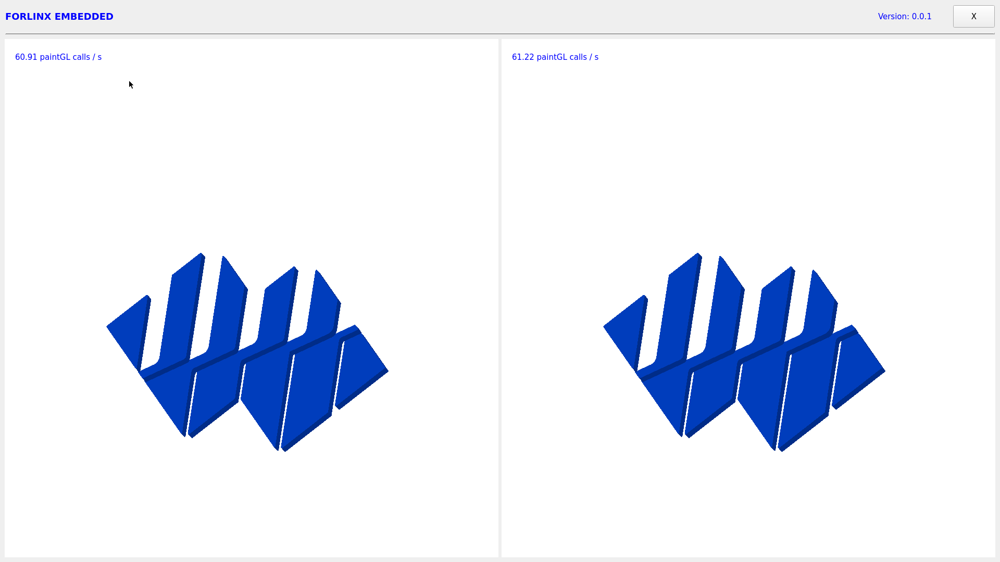
Application Interface
3.1.6 Music Playback Test
“musicplayer” is a simple audio test application that can be used to test whether the sound card functions normally and also serves as a simple audio player.

Application Icons
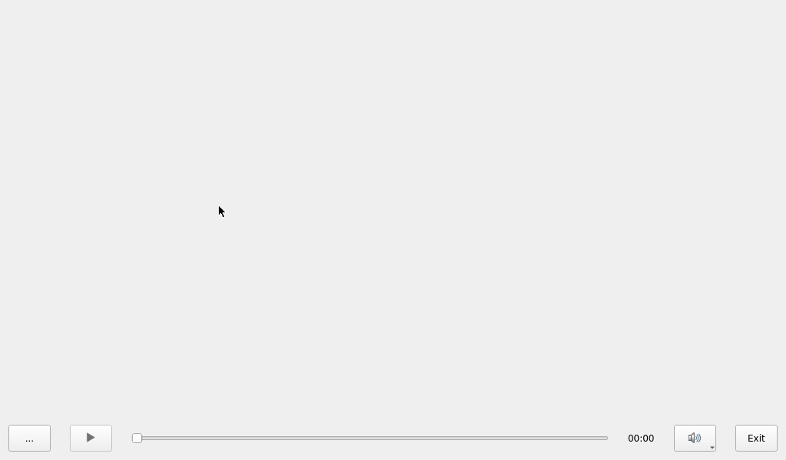
Application Interface
Click the button in the lower left corner and select the audio test file /userdata/media/test.mp3.
Note: The default sound card output is set to rk809. To use HDMI output, use the following command via the serial port:
root@OK3568-buildroot:/# gst-play-1.0/userdata/media/test.mp3 --audiosink="alsasink device=hw:1,0"
3.1.7 Recording Test
The “Audiorecorder” is an audio recording test application that can be used to verify if the sound card recording functionality is working properly:
Application Icons
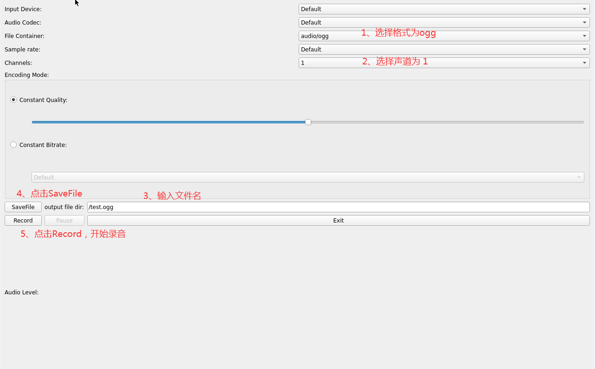
Application Interface
Click the dropdown menu to select the input device, audio format, and audio channels. In the output file dir text box, enter the output path and name for the recording file. Select audio/ogg for the File Container, and choose 1 for the Channels. Leave the remaining settings as default and click Record to start recording. The recorded audio file can be played using gst-play-1.0.
Click Exit to exit this test.
3.1.8 4G Test
Note: This test requires inserting a SIM card with internet access. Please refer to section “ Command Line Function Test (4G)”.
The “4G” test program is used to test the OK3568 external 4G module (EC20). Before testing, power off the development board, connect the 4G module, insert the SIM card, power on the development board, and open the test application.
Application Icons
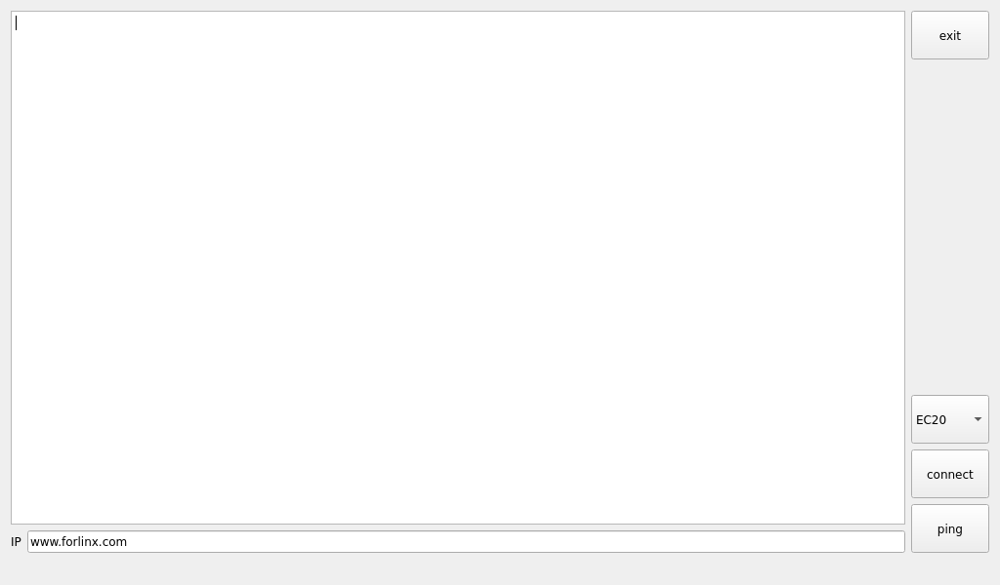
Application Interface
Click the Connect button, and the program will automatically begin the dialing process and obtain the IP, DNS settings, and other configurations. Wait a few seconds, and then click the Ping button to perform the test.
3.1.9 WIFI Test
“”WIFI” is a tool for configuring WiFi. The OK3568 platform comes with the AW-CM358 module onboard by default. The Wi-Fi module will appear as the mlan node in the system, with this test corresponding to mlan0 (use other nodes if there are multiple devices):
Application Icons
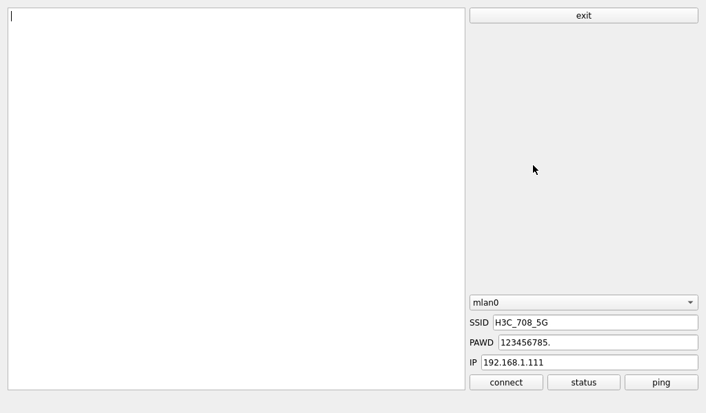
Application Interface
Select mlan0, enter the SSID of the router you wish to connect to in the SSID field, input the router’s password in the PAWD field, and click connect to establish a Wi-Fi connection to the router. Once an IP address is entered in the IP field, click ping to check if the current Wi-Fi network is stable.
By default, the OK3568 carrier board is equipped with the AW-CM358 module, and only the mlan0 node is available. This example demonstrates the use of the Wi-Fi tool with mlan0.
Open the WiFi test application, enter the correct network name and password, click connect, and after waiting for 5 seconds, click status to view the connection status.
After the connection is successful, click ping to test the network.
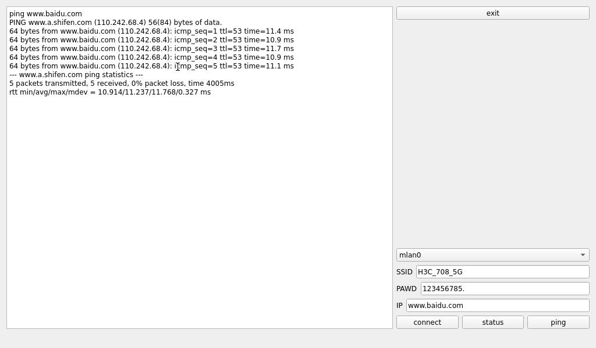
3.1.10 Network Configuration Test
When the OK3568 starts, the network card is set to DHCP by default. The “Network” configuration application allows you to choose between DHCP and static modes. In static mode, you can configure the IP address, subnet mask, gateway, and DNS.
Application Icons
Interface:
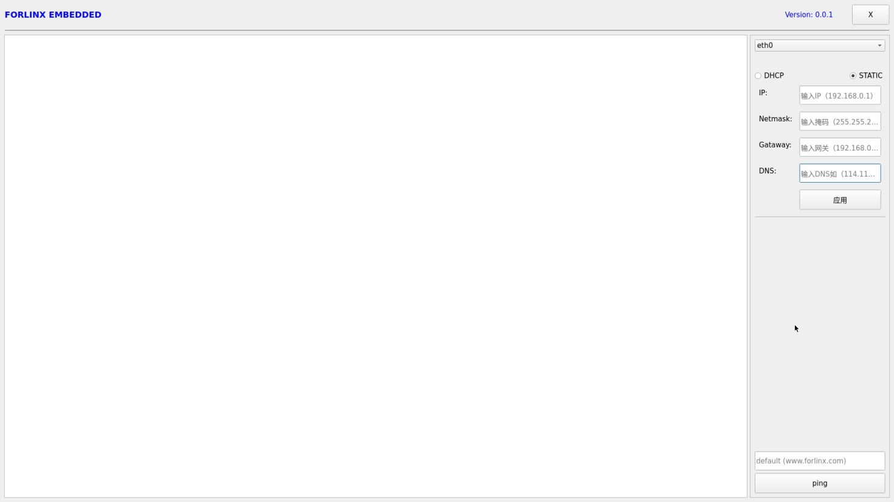
Select eth0 or eth1, choose DHCP, and click Apply at the bottom of the interface to restart the network and automatically obtain an IP address.
Click STATIC, select Set Static IP, enter the desired IP address in the IP field, enter the subnet mask in the netmask field, input the gateway in the gateway field, and enter the DNS in the DNS field.
After entering the URL, click ping. The result will be displayed in the left-side prompt box, as shown below:
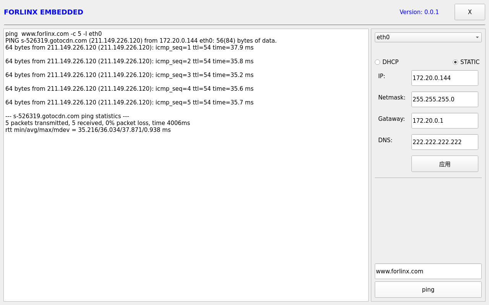
Note: The IP and other information configured in static mode will be saved in the system’s relevant configuration files, so the network settings will persist after each reboot. However, the network information configured in DHCP mode does not need to be considered, as an IP address will be dynamically assigned each time the system restarts.
3.1.11 Browser Test
“simplebrowser” is a simple and practical web browser. Ensure a stable network connection when using it, and confirm that DNS is available before accessing external websites. By default, the browser will access the Forlinx Embedded official website upon startup. Click the icon to launch:
Interface:
Note: If the development board’s time is abnormal, it may cause certificate issues. After using the browser, avoid turning off the power immediately. If you need to turn off the power, run the sync command in the command line first, otherwise, the browser may crash and fail to operate properly, requiring a re-flash to resolve the issue.
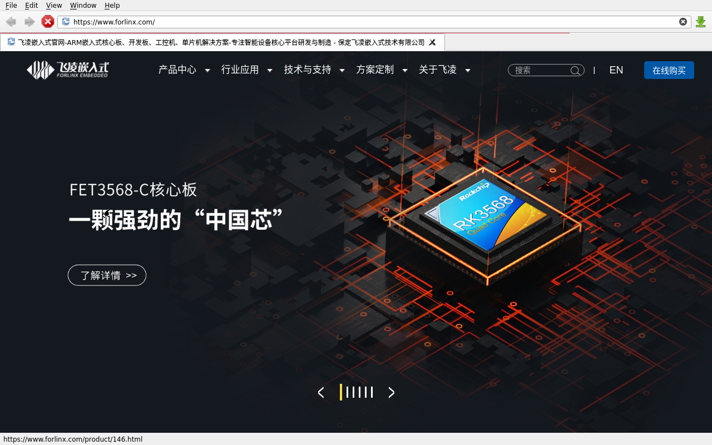
To exit the browser, use the navigation bar: File -> Quit.
3.1.12 Watchdog Test
“WatchDog” is an application used to test the proper functioning of the watchdog:
Application Icons
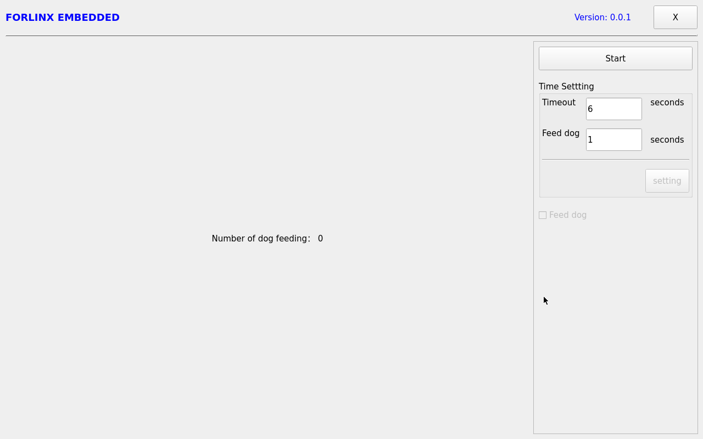
Application Interface
Click start to enable the watchdog feeding function, which will automatically feed the watchdog at intervals. At this point, the system will not restart.
When feed dog is unchecked, the countdown timer will begin (6 seconds), and the system will restart, indicating that the watchdog function is working correctly.
3.1.13 Key Test
“Keypad” is used to test the platform built-in keys:
Application Icons
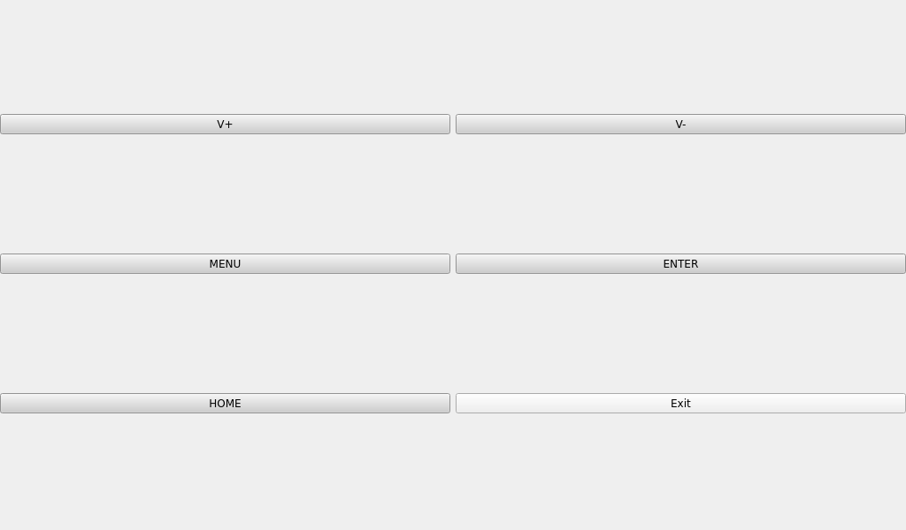
Application Interface
The OK3568 platform comes with 5 physical keys: VOL+, VOL-, MENU, ENTER, and HOME. When a key is pressed, the corresponding button in the test application will turn blue, indicating that the key function is working properly.
Press X to exit the current test and return to the system desktop.
3.1.14 RTC Test
The “RTC” application allows you to view and set the current system time:
Application Icons
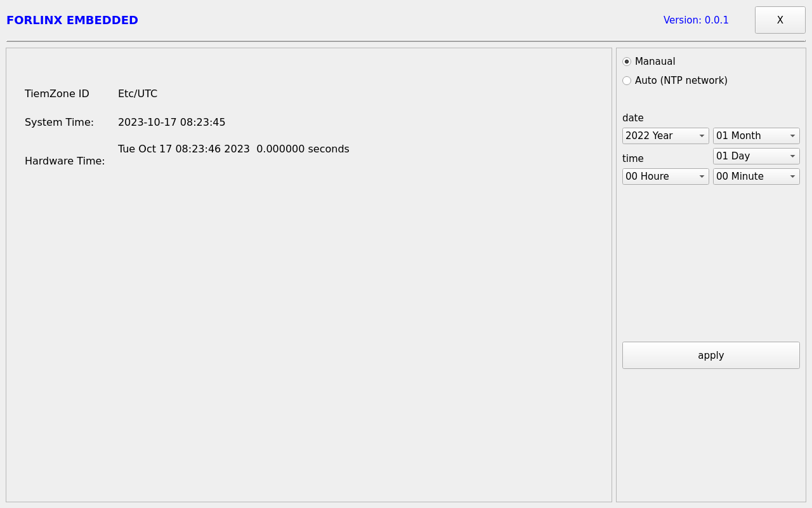
Application Interface
After selecting Manual, you can manually set the time. Choose date and time, click apply, and the time will be set. With an RTC backup battery installed, the time will persist even after power loss and reboot.
Click Auto for network time synchronization, and click apply to synchronize the time successfully.
3.1.15 UART Test
Click the desktop icon to test the UART interface on the OK3568 board:
Application Icons
The OK3568 serial port supports odd/even parity, 8 data bits, and 1 stop bit.
Before performing a serial loopback test, ensure the required serial port is shorted. There are UART0, UART2, UART8, and UART9 serial ports on the carrier board, as indicated in the carrier board schematic. UART2 is the debug serial port, and UART8 is for Bluetooth. The available serial ports for users are UART0 and UART9, where UART0 uses TTL levels, and UART9 uses RS485 levels. In the development board, they are represented as ttyS0 and ttyS9, respectively. For example, to test the UART0 port, short the UART0 transmit and receive pins as indicated in the development board schematic, corresponding to pins 2 and 4 on P35.
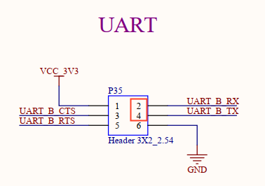
Once the shorting is complete, open the test program.
Click the settings on the right side, select the serial port and baud rate parameters, and click apply. The parameters will be set successfully. Next, click the first button on the right to establish a connection.
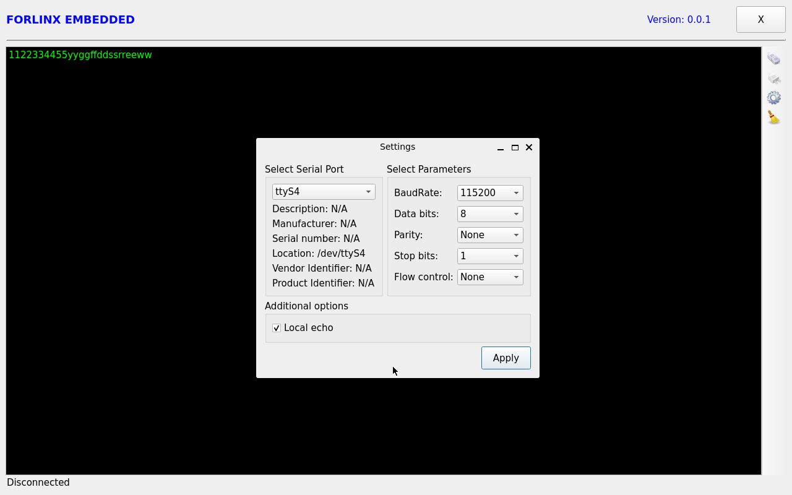
Application Interface
Click the “1” to automatically send the signal. Due to the shorting, the received “1” will also be displayed on the terminal.
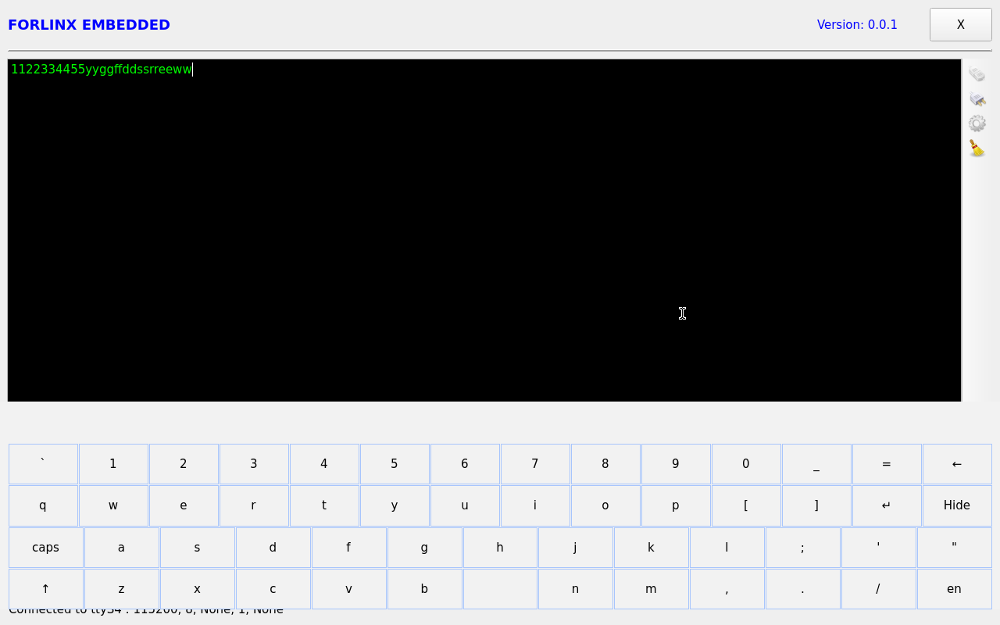
3.1.16 Backlight Test
“BackLight” is the application for adjusting LCD backligh
Application Icons
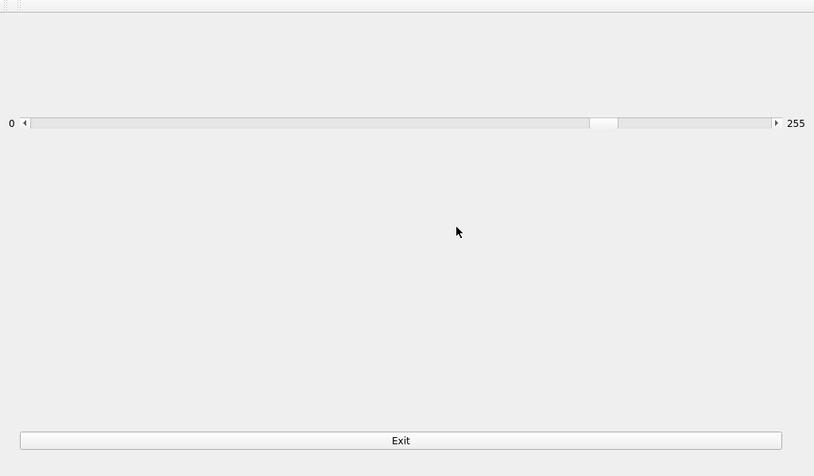
Application Interface
Drag the slider in the interface to adjust the LCD backlight brightness. Level 0 represents no backlight, and level 255 represents the maximum brightness.
3.1.17 CPU Frequency Configuration Test
Click the desktop icon to enter the next menu:
->
Application Icons
The main frequency of OK3568 CPU is up to 1.9 Ghz. By default, the CPU will dynamically adjust the main frequency according to the load. The main frequency of the CPU can also be fixed by setting. Click the desktop Power icon to enter the CPU frequency setting page:
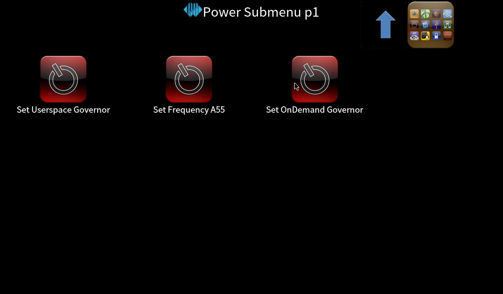
Set Userspace Governor: Set the main frequency in the user status
Set Frequency A55: Set the main frequency
Take the setting of main frequency as an example. If it is necessary to set a fixed frequency, please click Set Userspace Governor, click run, return to the operation interface as shown in the figure above, and click Set Frequency A55 to set.
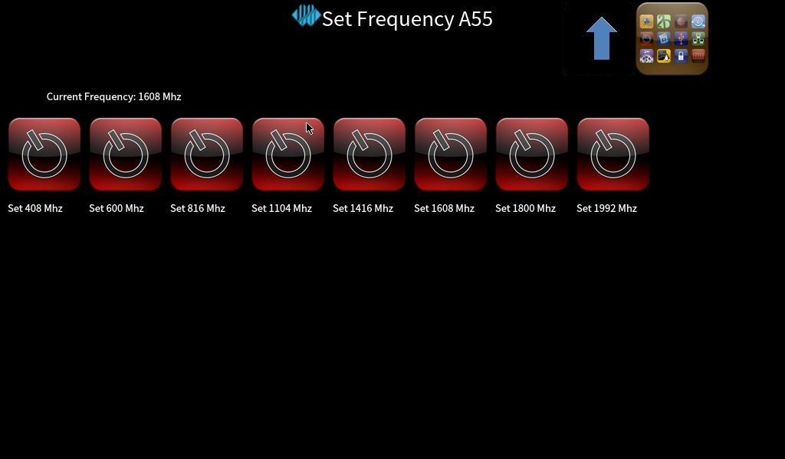
Select the corresponding frequency for setting according to the requirements.
4. OK3568 Command Line Function Testing
4.1 Command Line Function Testing
The OK3568-S platform comes with a rich set of command-line tools for users to utilize.
4.1.1 System Information Query
View kernel and CPU information:
root@OK3568-buildroot:/# uname -a
Linux OK3568-buildroot 5.10.160 #1 SMP Tue Feb 18 09:21:56 CST 2025 aarch64 GNU/Linux
View operating system information:
root@OK3568-buildroot:/# cat /etc/issue
Welcome to RK3566_RK3568 Buildroot
View environment variable information:
root@OK3568-buildroot:/# env
SHELL=/bin/bash
GST_V4L2_PREFERRED_FOURCC=NV12:YU12:NV16:YUY2
GST_VIDEO_CONVERT_PREFERRED_FORMAT=NV12:NV16:I420:YUY2
SEATD_VTBOUND=0
PIXMAN_USE_RGA=1
UMS_RO=0
GST_V4L2_USE_LIBV4L2=1
UMS_MOUNTPOINT=/mnt/ums
GST_INSPECT_NO_COLORS=1
UMS_MOUNT=0
PULSE_HOME=/userdata/.pulse
QT_GSTREAMER_WINDOW_VIDEOSINK=waylandsink
EDITOR=/bin/vi
GST_DEBUG_NO_COLOR=1
PWD=/root
LOGNAME=root
PREFERED_VIDEOSINK=waylandsink
UMS_SIZE=256M
HOME=/root
LANG=en_US.UTF-8
ADB_TCP_PORT=5555
WESTON_FREEZE_DISPLAY=/tmp/.freeze_weston
QT_GSTREAMER_WIDGET_VIDEOSINK=waylandsink
WAYLANDSINK_FORCE_DMABUF=1
GST_V4L2SRC_DEFAULT_DEVICE=/dev/video-camera0
TERM=vt100
USER=root
UMS_FILE=/userdata/ums_shared.img
AUTOAUDIOSINK_PREFERRED=pulsesink
ADBD_SHELL=/bin/bash
GST_V4L2SRC_RK_DEVICES=_mainpath:_selfpath:_bypass:_scale
WESTON_DRM_MIRROR=1
UMS_FSTYPE=vfat
SHLVL=1
GST_VIDEO_FLIP_USE_RGA=1
USB_FUNCS=adb
WESTON_DISABLE_ATOMIC=1
XDG_RUNTIME_DIR=/var/run
PLAYBIN2_PREFERRED_AUDIOSINK=pulsesink
GST_VIDEO_CONVERT_USE_RGA=1
PATH=/usr/bin:/usr/sbin
QTWEBENGINE_CHROMIUM_FLAGS=--no-sandbox --disable-es3-gl-context --ignore-gpu-blacklist --ignore-gpu-blocklist --enable-accelerated-video-decode
GST_V4L2SRC_MAX_RESOLUTION=3840x2160
_=/usr/bin/env
4.1.2 Frequency Scaling Test
Note: This process uses CPU0 as an example. In reality, CPU1, CPU2, and CPU3 will be adjusted simultaneously.
1. The types of CPU frequency governors supported by the current kernel:
root@OK3568-buildroot:/# cat /sys/devices/system/cpu/cpu0/cpufreq/scaling_available_governors
interactive conservative ondemand userspace powersave performance schedutil
Among these, userspace represents user mode, which allows other user programs to adjust CPU frequency in this mode.
2. View the frequency scaling levels supported by the current CPU.
root@OK3568-buildroot:/# cat /sys/devices/system/cpu/cpu0/cpufreq/scaling_available_frequencies
408000 600000 816000 1104000 1416000 1608000 1800000 1992000
3. Set to userspace mode and modify the frequency to 1800000:
root@OK3568-buildroot:/# echo userspace > /sys/devices/system/cpu/cpu0/cpufreq/scaling_governor
root@OK3568-buildroot:/# echo 1800000 > /sys/devices/system/cpu/cpu0/cpufreq/scaling_setspeed
To view the current frequency after modification:
root@OK3568-buildroot:/# cat /sys/devices/system/cpu/cpu0/cpufreq/cpuinfo_cur_freq
1800000
4.1.3 Temperature Test
To view temperature values:
root@OK3568-buildroot:/# cat /sys/class/thermal/thermal_zone0/temp
56111
The temperature value is 56℃.
4.1.4 DDR Bandwidth Test
root@OK3568-buildroot:/# memory_bandwidth.sh
Taking OK3568-S as an example, the printed information is as follows:
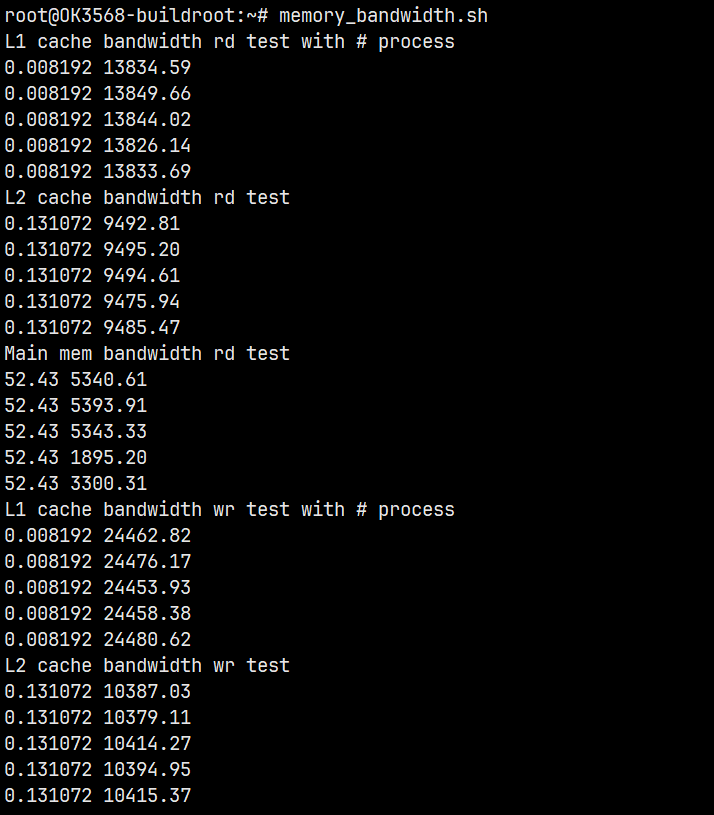
The DDR4 write bandwidth is approximately 1480M/s, and the read bandwidth is approximately 5100M/s.
4.1.5 Key Test
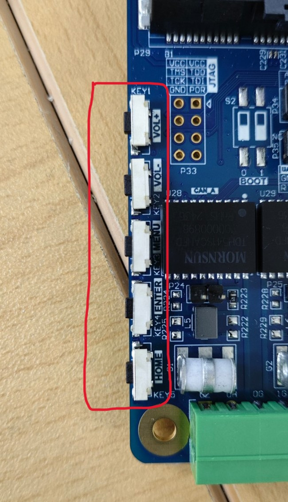
Use the keytest command-line tool for keypad testing. Currently, keytest supports testing of the five keys on the carrier board: VOL+, VOL-, MENU, ENTER, and HOME, with key codes 115, 114, 139, 28, and 102, respectively. When the keys are pressed and released in sequence, the terminal will display the following output:
Execute the following command:
root@OK3568-buildroot:/# fltest_keytest
Available devices:
/dev/input/event4: adc-keys
key115 Presse
key115 Released
key114 Presse
key114 Released
key139 Presse
key139 Released
key28 Presse
key28 Released
key102 Presse
key102 Released
4.1.6 Serial Port Test
OK3568-S serial port supports odd and even parity, 8 data bits, and 1 stop bit.
Before performing a serial loopback test, ensure the required serial port is shorted. There are UART0, UART2, UART8, and UART9 serial ports on the carrier board, as indicated in the carrier board schematic. UART2 is the debug serial port, and UART8 is for Bluetooth. The available serial ports for users are UART0 and UART9, where UART0 uses TTL levels, and UART9 uses RS485 levels. In the development board, they are represented as ttyS0 and ttyS9, respectively. For example, to test the UART0 port, short the UART0 transmit and receive pins as indicated in the development board schematic, corresponding to pins 2 and 4 on P35.
Once the shorting is complete, open the test program.
root@OK3568-buildroot:~# fltest_uarttest -d /dev/ttyS0
Welcome to uart test
Send test data:
forlinx_uart_test.1234567890...
Read Test Data finished,Read:
forlinx_uart_test.1234567890...
If the following content is printed on the serial port after execution, it indicates that the serial communication is working normally.
Next, the test method for UART9_485 is introduced:
Connect the 485_A0, 485_B0, and GND_485_0 pins from the P23 port to the computer through a USB-to-485 module, as shown below:
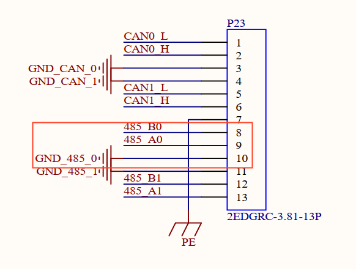
Input the following command and observe the information received by the serial port debugging tool:
root@OK3568-buildroot:~# fltest_uarttest -d /dev/ttyS9
Welcome to uart test
Send test data:
forlinx_uart_test.1234567890...
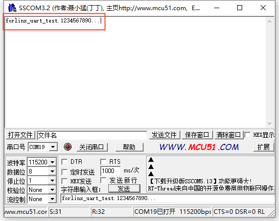
Send the data from the board back through the serial port debugging tool and observe the information received by the board:
root@OK3568-buildroot:~# fltest_uarttest -d /dev/ttyS9
Welcome to uart test
Send test data:
forlinx_uart_test.1234567890...
Read Test Data finished,Read:
forlinx_uart_test.1234567890...
4.1.7 Watchdog Test
Watchdog is a commonly used function in embedded systems. The device node for the watchdog in OK3568-S is /dev/watchdog. This test provides two testing programs. You can choose one based on the actual situation.
Start fltest_watchdog, set the timeout to 10 seconds, and periodically feed the dog.
root@OK3568-buildroot:/# fltest_watchdog
Watchdog Ticking Away!
This command will activate the watchdog and perform the dog-feeding operation, preventing the system from restarting.
Note: If the test program is terminated with Ctrl+C, the system will reset after 10 seconds. To prevent the reset, input the following command within 10 seconds after pressing Ctrl+C:
root@OK3568-buildroot:/# fltest_watchdog -d
Watchdog card disabled. //Turn off the watchdog
Start fltest_watchdogrestart, set the reset time to 10 seconds, and do not feed the dog.
root@OK3568-buildroot:/# fltest_watchdogrestart
Restart after 10 seconds
This command will activate the watchdog but will not feed the dog. The system will restart after 10 seconds.
4.1.8 WiFi Test
The OK3568-S platform supports the onboard AW-CM358, which supports both STA and AP modes.
4.1.8.1 STA Mode
Before using the Wi-Fi functionality, follow these steps to configure it:
Step 1:
Assuming the Wi-Fi hotspot SSID is ChinaNet-Jvgv and the password is asdasd123,
input the following command in the terminal:
root@OK3568-buildroot:/# fltest_wifi.sh -i mlan0 -s "ChinaNet-Jvgv" -p asdasd123
In the above command:
-i wlan0 or wlan1: The specific node for each module must be determined in advance based on the actual situation.
-s: The actual name of the Wi-Fi hotspot to connect to.
-p: Followed by the parameter Password, which is the password for the WiFi hotspot. If the current hotspot has no password, set the parameter after -p to NONE.
Step 2:
Check if external network access is available by pinging the internet. Input the following command in the terminal:
root@OK3568-buildroot:/# ping www.forlinx.com
PING www.forlinx.com (220.181.111.188): 56 data bytes
64 bytes from 220.181.111.188: seq=0 ttl=57 time=5.562 ms
64 bytes from 220.181.111.188: seq=1 ttl=57 time=5.884 ms
64 bytes from 220.181.111.188: seq=2 ttl=57 time=4.595 ms
64 bytes from 220.181.111.188: seq=3 ttl=57 time=4.323 ms
64 bytes from 220.181.111.188: seq=4 ttl=57 time=4.682 ms
64 bytes from 220.181.111.188: seq=5 ttl=57 time=3.798 ms
To stop, press Ctrl+C. If the ping is successful, it indicates that the network is now working properly.
4.1.8.2 AP Mode
Before using the hotspot functionality, ensure that the network interface is connected and can access the internet. To configure the hotspot, run the command twice:
The first time, the AP will be set to DISABLED.
The second time, it will be set to ENABLE.
root@OK3568-buildroot:/# fltest_hostapd.sh
killall: hostapd: no process killed
Stopping dnsmasq: FAIL
Starting dnsmasq: Configuration file: /etc/hostapd-2.4g.conf
Using interface uap0 with hwaddr ea:fb:1c:67:09:af and ssid "OK3568_WIFI_2.4G_AP"
[ 75.916321] wlan: Starting AP
OK
root@OK3568-buildroot:/# [ 75.917730] fw doesn't support 11ax
[ 75.925842] CMD_RESP: cmd 0xb1 error, result=0x1
Failed to set beacon parameters
[ 75.925876] IOCTL failed: 0000000023c4c37b id=0x20000, sub_id=0x20001 action=1, status_code=0x1
Interface initialization failed
[ 75.925901] woal_cfg80211_add_beacon: start uap failed
uap0: interface state UNINITIALIZED->DISABLED
uap0: AP-DISABLED
uap0: Unable to setup interface.
uap0: interface state DISABLED->DISABLED
uap0: AP-DISABLED
uap0: CTRL-EVENT-TERMINATING
hostapd_free_hapd_data: Interface uap0 wasn't started
nl80211: deinit ifname=uap0 disabled_11b_rates=0
root@OK3568-buildroot:/# fltest_hostapd.sh
killall: hostapd: no process killed
Stopping dnsmasq: OK
Starting dnsmasq: Configuration file: /etc/hostapd-2.4g.conf
Using interface uap0 with hwaddr ea:fb:1c:67:09:af and ssid "OK3568_WIFI_2.4G_AP"
[ 82.878776] wlan: Starting AP
[ 82.880177] fw doesn't support 11ax
[ 82.890603] wlan: AP started
[ 82.890785] IPv6: ADDRCONF(NETDEV_CHANGE): uap0: link becomes ready
OK
[ 82.896832] Set AC=3, txop=47 cwmin=3, cwmax=7 aifs=1
root@OK3568-buildroot:/# uap0: interface state UNINITIALIZED->ENABLED
[ 82.899399] Set AC=2, txop=94 cwmin=7, cwmax=15 aifs=1
uap0: AP-ENABLED
[ 82.901643] Set AC=0, txop=0 cwmin=15, cwmax=63 aifs=3
[ 82.903627] Set AC=1, txop=0 cwmin=15, cwmax=1023 aifs=7
WiFi hotspot name: OK3568_WIFI_2.4G_AP
Password:12345678
At this point, a mobile phone can connect to this hotspot and access the internet.
4.1.9 Bluetooth Test
The OK3568-S carrier board is equipped with the AW-CM358 module, which integrates Bluetooth functionality. This section demonstrates how to transfer files via Bluetooth between the phone and the development board.
root@OK3568-buildroot:/# bluetoothctl // Open the BlueZ Bluetooth tool
Agent registered
[bluetooth]# power on // Turn on the Bluetooth device
[CHG] Controller 36:DC:25:54:7C:CB Class: 0x00100000
Changing power on succeeded
[CHG] Controller 36:DC:25:54:7C:CB Powered: yes
[bluetooth]# pairable on // Set to pairable mode
Changing pairable on succeeded
[bluetooth]# discoverable on // Set to discoverable mode
Changing discoverable on succeeded
[CHG] Controller 36:DC:25:54:7C:CB Discoverable: yes
[bluetooth]# agent on // Enable the agent
Agent is already registered
[bluetooth]# default-agent // Set the current agent as default
Default agent request successful
[NEW] Device C4:FE:5B:17:C7:78 OPPO Reno3 5G
Request confirmation
[agent] Confirm passkey 508432 (yes/no): yes
[CHG] Device C4:FE:5B:17:C7:78 Modalias: bluetooth:v001Dp1200d1436
[CHG] Device C4:FE:5B:17:C7:78 UUIDs: 00001105-0000-1000-8000-00805f9b34fb
[CHG] Device C4:FE:5B:17:C7:78 UUIDs: 0000110a-0000-1000-8000-00805f9b34fb
[CHG] Device C4:FE:5B:17:C7:78 UUIDs: 0000110c-0000-1000-8000-00805f9b34fb
[CHG] Device C4:FE:5B:17:C7:78 UUIDs: 0000110e-0000-1000-8000-00805f9b34fb
[CHG] Device C4:FE:5B:17:C7:78 UUIDs: 00001112-0000-1000-8000-00805f9b34fb
[CHG] Device C4:FE:5B:17:C7:78 UUIDs: 00001115-0000-1000-8000-00805f9b34fb
E:5B:17:C7:78 UUIDs: 0000111f-0000-1000-8000-00805f9b34fbb34fb
[CHG] Device C4:FE:5B:17:C7:78 UUI-8000-00805f9b34fb
[CHG] Device C4:FE:5B:17:C7:78-1000-8000-00805f9b34fb
[CHG] Device C4:FE:5B:17:C7:700-1000-8000-00805f9b34fb
[OPPO Reno3 5G]#vice C4:FE:5B:17:C7:78 UUIDs: 0000aa15-0000-1000-8000-008[CHG] Device C4:FE:5B:17:C7:95c-9f4f-bb80a90cdf00
ice C4:FE:5B:17:C7:78 ServicesResolved: yes
[CHG] Device C4:FE:5B:17:C7:78 Paired: yes
[CHG] Controller 36:DC:25:54:7C:CB Discoverable: no
[CHG] Device C4:FE:5B:17:C7:78 ServicesResolved: no
[CHG] Device C4:FE:5B:17:C7:78 Connected: no
After successful pairing, the files on the mobile phone can be shared to the development board through Bluetooth.
To exit bluetoothctl, type quit. The received files will be located in the /root directory.
[bluetooth]# quit
root@OK3568-buildroot:/# ls /root/
wx_camera_1581992646090.jpg
At the same time, we can also send the files on the development board to the mobile phone.
root@OK3568-buildroot:/# fltest_obexctl.sh
[obex]# connect C4:FE:5B:17:C7:78
Attempting to connect to C4:FE:5B:17:C7:78
[NEW] Session /org/bluez/obex/client/session0 [default]
[NEW] ObjectPush /org/bluez/obex/client/session0
Connection successful
[C4:FE:5B:17:C7:78]# send /home/forlinx/audio/test.mp3
Attempting to send /home/forlinx/audio/test.mp3 to /org/bluez/obex/client/session0
[NEW] Transfer /org/bluez/obex/client/session0/transfer0
Transfer /org/bluez/obex/client/session0/transfer0
Status: queued
Name: test.mp3
Size: 4818092
Filename: /home/forlinx/audio/test.mp3
Session: /org/bluez/obex/client/session0
[CHG] Transfer /org/bluez/obex/client/session0/transfer0 Status: active
[CHG] Transfer /org/bluez/obex/client/session0/transfer0 Transferred: 8046 (@8KB/s 09:57)
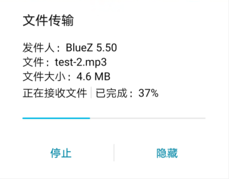
Note: For certain manufacturers’ phones, received files must include a file extension; otherwise, they may be rejected by the Android system. Therefore, please try to use files with extensions for testing.
4.1.10 RTC Function Test
RTC Test, primarily involves setting the software and hardware clock using the date and hwclock tools. The test checks whether the software clock synchronizes with the RTC clock after the development board is powered off and then powered on again (Note: Ensure that a coin battery is installed on the board).
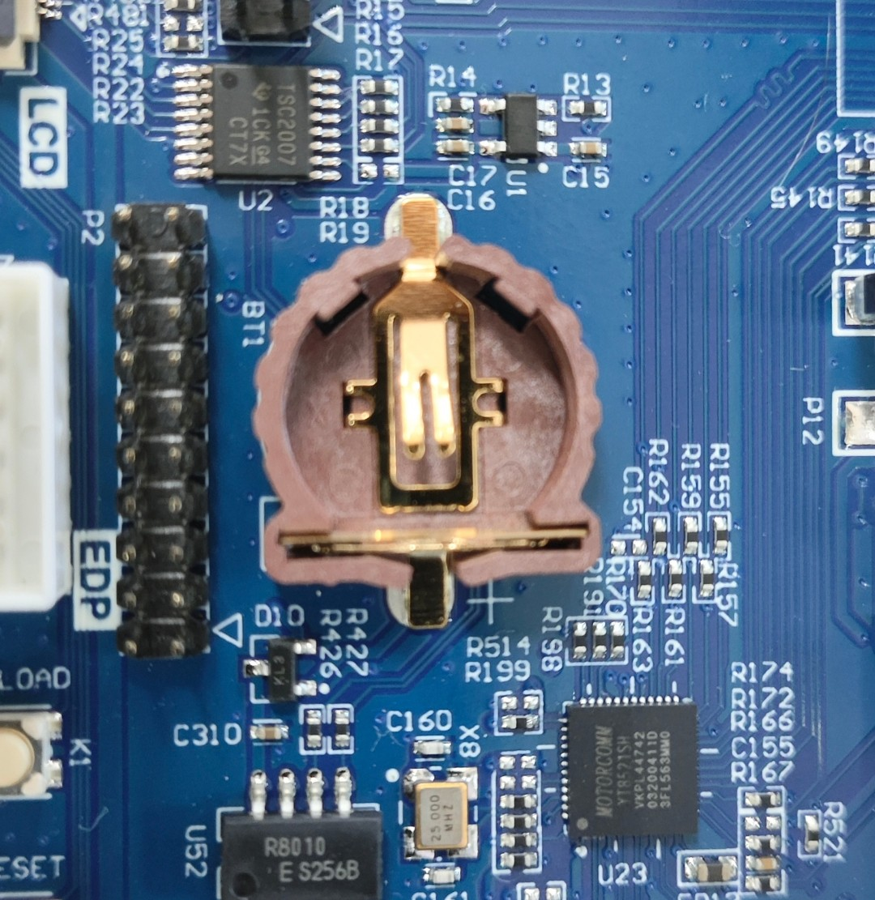
root@OK3568-buildroot:/# date -s "2022-2-9 10:50:00" // Set the system time
Wed Feb 9 10:50:00 UTC 2022
root@OK3568-buildroot:/# date // Read the system time
Wed Feb 9 10:51:00 UTC 2022
root@OK3568-buildroot:/# hwclock -w -u // Write the system time and timezone to RTC
root@OK3568-buildroot:/# hwclock -r // Read the hardware time
Wed Feb 9 02:50:14 2022 0.000000 seconds
root@OK3568-buildroot:/# date
Wed Feb 9 10:52:00 UTC 2022
4.1.11 USB Mouse Test
When a USB mouse is connected to the USB port of the OK3568-S platform, the serial terminal prints the following information:
root@OK3568-buildroot:/# [ 1513.413310] usb 3-1.2: new low-speed USB device number 4 using ehci-platform
[ 1513.503041] usb 3-1.2: New USB device found, idVendor=192f, idProduct=0916
[ 1513.503724] usb 3-1.2: New USB device strings: Mfr=0, Product=2, SerialNumber=0
[ 1513.504492] usb 3-1.2: Product: USB Optical Mouse
[ 1513.511579] input: USB Optical Mouse as /devices/platform/fe380000.usb/usb3/3-1/3-1.2/3-1.2:1.0/0003:192F:0916.0002/input/input7
[ 1513.564896] hid-generic 0003:192F:0916.0002: input,hidraw0: USB HID v1.11 Mouse [USB Optical Mouse] on usb-fe380000.usb-1.2/input0
An arrow cursor appears on the screen, and the mouse is now working properly.
When the USB mouse is unplugged, the serial terminal will print the following:
[root@ rk3568/]# [ 1583.443782] usb 3-1.2: USB disconnect, device number 4
At this point, the arrow cursor on the screen disappears, indicating that the mouse has been successfully removed.
4.1.12 USB 2.0/USB3.0
The OK3568-S supports two USB 2.0 and two USB 3.0 interfaces. You can connect USB devices such as USB mice, USB keyboards, and USB flash drives to any of the onboard USB HOST interfaces, and these devices support hot-plugging. Take mounting USB flash driver as an example:
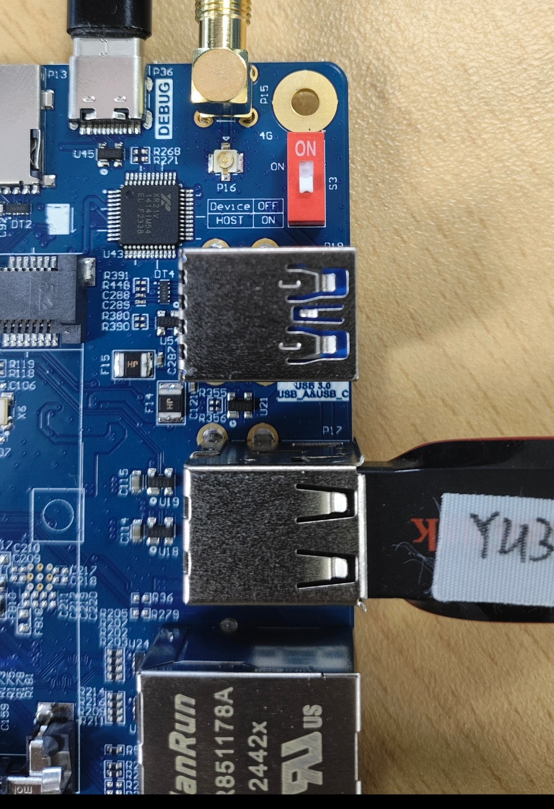
The USB 3.0 and OTG are multiplexed, and switching is done via a DIP switch. When using the USB 3.0 interface, ensure the DIP switch is in the ON position:
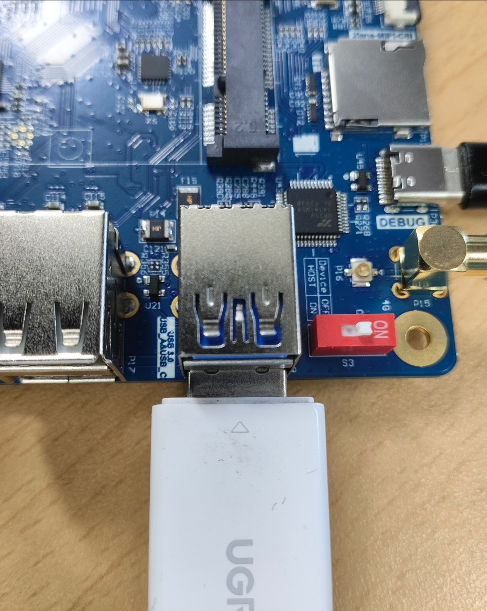
The terminal will print information about the USB drive. Since there are various USB drives, the displayed information may vary.
Step 1: After booting the development board, connect a USB flash drive to one of the USB host interfaces on the development board;
Serial port information:
root@OK3568-buildroot:/# [ 1771.366204] usb 8-1: new SuperSpeed Gen 1 USB device number 2 using xhci-hcd
[ 1771.388752] usb 8-1: New USB device found, idVendor=05e3, idProduct=0749, bcdDevice=15.35
[ 1771.388893] usb 8-1: New USB device strings: Mfr=3, Product=4, SerialNumber=5
[ 1771.388930] usb 8-1: Product: USB3.0 Card Reader
[ 1771.388988] usb 8-1: Manufacturer: Generic
[ 1771.389034] usb 8-1: SerialNumber: 000000001536
[ 1771.396803] usb-storage 8-1:1.0: USB Mass Storage device detected
[ 1771.397699] usb-storage 8-1:1.0: Quirks match for vid 05e3 pid 0749: 420
[ 1771.397897] scsi host0: usb-storage 8-1:1.0
[ 1772.421609] scsi 0:0:0:0: Direct-Access Generic MassStorageClass 1536 PQ: 0 ANSI: 6
[ 1772.725888] sd 0:0:0:0: [sda] 31116288 512-byte logical blocks: (15.9 GB/14.8 GiB)
[ 1772.726972] sd 0:0:0:0: [sda] Write Protect is off
[ 1772.728240] sd 0:0:0:0: [sda] Write cache: disabled, read cache: enabled, doesn't support DPO or FUA
[ 1772.737200] sda: sda1
[ 1772.741706] sd 0:0:0:0: [sda] Attached SCSI removable disk
[ 1772.946654] FAT-fs (sda1): utf8 is not a recommended IO charset for FAT filesystems, filesystem will be case sensitive!
[ 1772.949198] FAT-fs (sda1): Volume was not properly unmounted. Some data may be corrupt. Please run fsck.
Step 2: Check the mount directory:
root@OK3568-buildroot:/# ls /run/media/
sda1: /sda1 is the first inserted USB storage device, and it will increment with additional devices (e.g., sda2, sda3, etc.);
Step 3: View the contents of the USB flash drive:
root@OK3568-buildroot:/# ls -l /run/media/sda1
drwxrwx--- 3 root disk 8192 Mar 4 2021 Music
Before performing read/write tests, ensure the CPU frequency is noted.
Write test:
root@OK3568-buildroot:/# dd if=/dev/zero of=/run/media/sda1/test bs=1M count=500 conv=fsync
500+0 records in
500+0 records out
524288000 bytes (524 MB, 500 MiB) copied, 37.3332 s, 14.0 MB/s//The write speed is limited to the specific storage device.。
Read test:
Note: To ensure accurate data, restart the development board before testing the read speed.
root@OK3568-buildroot:/# dd if=/run/media/sda1/test of=/dev/null bs=1M
500+0 records in
500+0 records out
524288000 bytes (524 MB, 500 MiB) copied, 20.0277 s, 26.2 MB/s
4.1.13 LCD Backlight Adjustment
The brightness range for the backlight is (0–255), where 255 indicates the highest brightness and 0 turns off the backlight. Enter the following command in the terminal after system startup for backlight testing.
Check the current screen backlight value:
root@OK3568-buildroot:/# cat /sys/class/backlight/lvds-backlight/brightness // Check the LVDS screen backlight value
200
root@OK3568-buildroot:/# cat /sys/class/backlight/dsi1-backlight/brightness // Check the DSI screen backlight value
200
root@OK3568-buildroot:/# cat /sys/class/backlight/edp-backlight/brightness // Check the eDP screen backlight value
200
root@OK3568-buildroot:/# cat /sys/class/backlight/rgb-backlight/brightness // Check the RGB screen backlight value
200
2. Turn off the backlight:
root@OK3568-buildroot:/# echo 0 >/sys/class/backlight/lvds-backlight/brightness // Turn off the LVDS screen backlight
root@OK3568-buildroot:/# echo 0 >/sys/class/backlight/dsi1-backlight/brightness // Turn off the DSI screen backlight
root@OK3568-buildroot:/# echo 0 > /sys/class/backlight/edp-backlight/brightness // Turn off the eDP screen backlight
root@OK3568-buildroot:/# echo 0 > /sys/class/backlight/rgb-backlight/brightness // Turn off the RGB screen backlight
3. Turn on the LCD backlight:
root@OK3568-buildroot:/# echo 255 >/sys/class/backlight/lvds-backlight/brightness // Turn on the LVDS screen backlight
root@OK3568-buildroot:/# echo 255 >/sys/class/backlight/dsi1-backlight/brightness // Turn on the DSI screen backlight
root@OK3568-buildroot:/# echo 255> /sys/class/backlight/edp-backlight/brightness // Turn on the eDP screen backlight
root@OK3568-buildroot:/# echo 255> /sys/class/backlight/rgb-backlight/brightness // Turn on the RGB screen backlight
4.1.14 TF Card Test
Insert the TF card into the TF card slot on the development board. Under normal circumstances, the following print information will appear on the development board terminal:
root@OK3568-buildroot:/# [ 294.166421] mmc_host mmc1: Bus speed (slot 0) = 50000000Hz (slot req 100000000Hz, actual 50000000HZ div = 0)
[ 294.186093] dwmmc_rockchip fe2b0000.dwmmc: Successfully tuned phase to 360
[ 294.186188] mmc1: new ultra high speed SDR50 SDHC card at address aaaa
[ 294.191496] mmcblk1: mmc1:aaaa SL08G 7.40 GiB
[ 294.202785] mmcblk1: p1
[ 294.266294] dwmmc_rockchip fe2b0000.dwmmc: Successfully tuned phase to 70
[ 294.279993] mmc_host mmc1: Bus speed (slot 0) = 375000Hz (slot req 400000Hz, actual 375000HZ div = 0)
[ 294.458237] mmc_host mmc1: Bus speed (slot 0) = 50000000Hz (slot req 100000000Hz, actual 50000000HZ div = 0)
[ 294.847627] dwmmc_rockchip fe2b0000.dwmmc: Successfully tuned phase to 360
[ 295.071071] FAT-fs (mmcblk1p1): utf8 is not a recommended IO charset for FAT filesystems, filesystem will be case sensitive!
[ 295.073331] FAT-fs (mmcblk1p1): Volume was not properly unmounted. Some data may be corrupt. Please run fsck.
By default, the TF card is mounted to the file system/run/media/directory.
root@OK3568-buildroot:/# mount | grep mmcblk1 //View the mount directory
/dev/mmcblk1p1 on /run/media/mmcblk1p1 type vfat (rw,relatime,fmask=0022,dmask=0022,codepage=936,iocharset=utf8,shortname=mixed,errors=remount-ro)
Write Test
root@OK3568-buildroot:/# dd if=/dev/zero of=/run/media/mmcblk1p1/test bs=1M count=500 conv=fsync 500+0 records in
500+0 records out
524288000 bytes (524 MB, 500 MiB) copied, 24.6959 s, 21.2 MB/s
Read Test
Note: To ensure the accuracy of the data, please restart the development board to test the reading speed.
root@OK3568-buildroot:/# dd if=/run/media/mmcblk1p1/test of=/dev/null bs=1M//Read test
500+0 records in
500+0 records out
524288000 bytes (524 MB, 500 MiB) copied, 8.31059 s, 63.1 MB/s
4.1.15 eMMC Test
The eMMC operates in HS400 mode by default. Below is a simple test of eMMC read/write speed using the ext4 file system as an example.
Note: To ensure the accuracy of the data, please restart the development board to test the reading speed.
root@OK3568-buildroot:/# dd if=/dev/zero of=/test bs=1M count=500 conv=fsync//Write test
500+0 records in
500+0 records out
524288000 bytes (524 MB, 500 MiB) copied, 6.73418 s, 77.9 MB/s
root@OK3568-buildroot:/# dd if=/test of=/dev/null bs=1M //Read test
500+0 records in
500+0 records out
524288000 bytes (524 MB, 500 MiB) copied, 3.05486 s, 172 MB/s
4.1.16 Ethernet Configuration
The OK3568-S is equipped with two Gigabit Ethernet controllers.
4.1.16.1 Static IP Configuration
Note: This method sets a static network IP. Once configured, the network interface card (NIC) should obtain the corresponding network IP, which indicates normal operation. If the network is unreachable (ping fails), ensure that multiple NIC in the same subnet are configured correctly. Adjust the routing based on the scenario or use different subnets by default.
Development board IP: 192.168.1.151
Router IP: 192.168.1.1
Subnet mask: 255.255.255.0
Power on the development board and execute the following command:
root@OK3568-buildroot:/# vi /etc/network/interfaces // Open the configuration file
# Interface file auto-generated by Buildroot
auto lo
iface lo inet loopback
// The following content needs to be added:
auto eth0
iface eth0 inet static // Assign a static IP to the network interface
address 192.168.1.151 // Set the fixed IP address
netmask 255.255.255.0 // Set the subnet mask
gateway 192.168.1.1 // Set the gateway
After saving and exiting, restart the board or re-enable the configuration:
root@OK3568-buildroot:/# ifdown -a // Disable the configuration
root@OK3568-buildroot:/# ifup -a // Enable the configuration
[ 646.969888] IPv6: ADDRCONF(NETDEV_UP): eth0: link is not ready
root@OK3568-buildroot:/# [ 651.976934] rk_gmac-dwmac fe300000.ethernet eth0: Link is Up - 1Gbps/Full - flow control off
[ 651.977798] IPv6: ADDRCONF(NETDEV_CHANGE): eth0: link becomes ready
4.1.16.2 Automatic IP Acquisition Method
root@OK3568-buildroot:/# vi /etc/network/interfaces // Open the configuration file
# Interface file auto-generated by Buildroot
auto lo
iface lo inet loopback
// The following content needs to be added, removing the address, netmask, and gateway properties.
auto eth0
iface eth0 inet dhcp
root@OK3568-buildroot:/# ifdown -a // Disable the configuration
root@OK3568-buildroot:/# ifup -a // Enable the configuration
[ 971.278624] IPv6: ADDRCONF(NETDEV_UP): eth0: link is not ready
udhcpc: started, v1.27.2
udhcpc: sending discover
udhcpc: sending discover
[ 975.284961] rk_gmac-dwmac fe300000.ethernet eth0: Link is Up - 1Gbps/Full - flow control off
[ 975.285828] IPv6: ADDRCONF(NETDEV_CHANGE): eth0: link becomes ready
4.1.17 Web Service
The OK3568-S development board comes pre-installed with the lighttpd web server. The lighttpd service starts automatically upon system boot. You can access the web server pages by entering the development board IP address in a web browser on the PC, as shown below:

Note: The development board network IP must be in the same subnet as the PC network IP, or the PC must be in the same network subnet as the development board.
4.1.18 Audio Playback/Recording Test
There is a standard 3.5mm audio socket on the development board (1 XH2.54-2P white socket at P39) that can drive an 8Ω speaker with a maximum output power of 1.3W. Before performing the audio playback test, please plug in your prepared headphones into the audio jack or connect the speaker to the corresponding slot on the carrier board. Use the following command for testing:
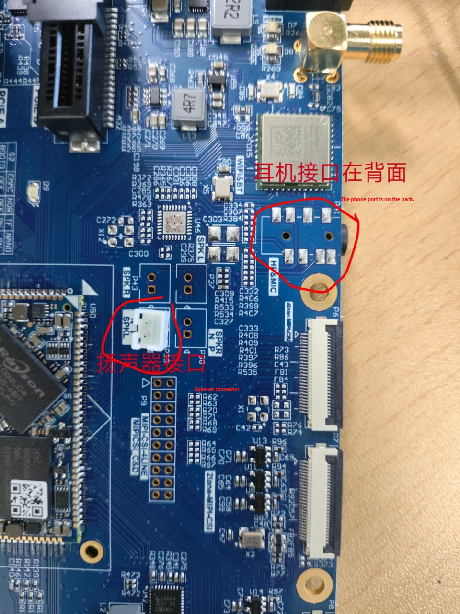
Note: Before performing the recording test, please plug in the prepared microphone into the 3.5mm headphone jack.
root@OK3568-buildroot:/# gst-play-1.0 /userdata/media/test.mp3
// Audio playback test using headphones or speakers
Press 'k' to see a list of keyboard shortcuts.
Now playing /home/forlinx/audio/test.mp3
Redistribute latency...
0:00:05.8 / 0:05:00.0
root@OK3568-buildroot:/# gst-play-1.0 /userdata/media/test.mp3 --audiosink="alsasink device=hw:1,0"
// HDMI audio playback test
Press 'k' to see a list of keyboard shortcuts.
Now playing /home/forlinx/audio/test.mp3
Redistribute latency...
0:00:05.3 / 0:05:00.0
root@OK3568-buildroot:/# arecord -c 2 -r 44100 -f cd mic.wav
// Audio recording test, press ctrl + c to stop recording.
Recording WAVE 'mic.wav' : Signed 16 bit Little Endian, Rate 44100 Hz, Stereo
Aborted by signal Interrupt...
root@OK3568-buildroot:/# ls
// You can see the generated recording file "mic.wav" in the current directory.
bin home lost+found oem run timestamp var
busybox.config init media opt sbin tmp
data lib mic.wav proc sdcard udisk
dev lib64 misc rockchip_test sys userdata
etc linuxrc mnt root system usr
root@OK3568-buildroot:/# ls
// You can see the generated recording file "mic.wav" in the current directory.
bin home lost+found oem run timestamp var
busybox.config init media opt sbin tmp
data lib mic.wav proc sdcard udisk
dev lib64 misc rockchip_test sys userdata
etc linuxrc mnt root system usr
4.1.19 4G EC20 Module Test
The OK3568-S supports a 4G module. Connect the 4G module and insert the SIM card before powering on the development board.
Note: Ensure the correct insertion direction for the SIM card, as there are printed markings on the carrier board. Also, connect the antenna and use a micro SIM card for testing.
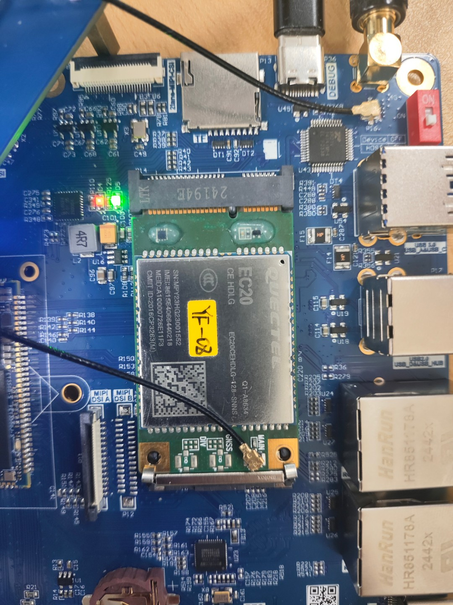
root@OK3568-buildroot:/# quectelCM &
[1] 1080
root@OK3568-buildroot:~# [01-01_00:00:47:049] Quectel_QConnectManager_Linux_V1.6.0.24
[01-01_00:00:47:050] Find /sys/bus/usb/devices/1-1.1 idVendor=0x2c7c idProduct=0x125, bus=0x001, dev=0x003
[01-01_00:00:47:050] Auto find qmichannel = /dev/qcqmi0
[01-01_00:00:47:050] Auto find usbnet_adapter = usb0
[01-01_00:00:47:050] netcard driver = GobiNet, driver version = V1.6.2.14
[01-01_00:00:47:051] Modem works in QMI mode
[01-01_00:00:47:074] Get clientWDS = 7
[01-01_00:00:47:105] Get clientDMS = 8
[01-01_00:00:47:138] Get clientNAS = 9
[01-01_00:00:47:170] Get clientUIM = 10
[01-01_00:00:47:202] Get clientWDA = 11
[01-01_00:00:47:234] requestBaseBandVersion EC20CEHDLGR06A09M1G
[01-01_00:00:47:362] requestGetSIMStatus SIMStatus: SIM_READY
[01-01_00:00:47:394] requestGetProfile[1] cmnet///0
[01-01_00:00:47:426] requestRegistrationState2 MCC: 460, MNC: 0, PS: Attached, DataCap: LTE
[01-01_00:00:47:458] requestQueryDataCall IPv4ConnectionStatus: DISCONNECTED
[01-01_00:00:47:459] ifconfig usb0 0.0.0.0
[ 50.853155] IPv6: ADDRCONF(NETDEV_CHANGE): usb0: link becomes ready
[01-01_00:00:47:470] ifconfig usb0 down
[01-01_00:00:47:555] requestSetupDataCall WdsConnectionIPv4Handle: 0x86d77fb0
[01-01_00:00:47:715] ifconfig usb0 up
[01-01_00:00:47:729] busybox udhcpc -f -n -q -t 5 -i usb0
udhcpc: started, v1.36.0
udhcpc: broadcasting discover
udhcpc: broadcasting select for 10.125.161.36, server 10.125.161.37
udhcpc: lease of 10.125.161.36 obtained from 10.125.161.37, lease time 7200
[01-01_00:00:47:932] deleting routers
[01-01_00:00:47:956] adding dns 111.11.1.3
[01-01_00:00:47:956] adding dns 111.11.11.3
root@OK3568-buildroot:/# ping www.forlinx.com
//进行ping测试
PING s-526319.gotocdn.com (211.149.226.120) 56(84) bytes of data.
64 bytes from 211.149.226.120 (211.149.226.120): icmp_seq=1 ttl=51 time=1430 ms
64 bytes from 211.149.226.120 (211.149.226.120): icmp_seq=2 ttl=51 time=434 ms
^C
--- s-526319.gotocdn.com ping statistics ---
7 packets transmitted, 2 received, 71% packet loss, time 5999ms
rtt min/avg/max/mdev = 434.376/932.642/1430.909/498.267 ms, pipe 2
4.1.20 Sleep and Wake-Up Test
The OK3568-S Linux platform supports sleep and wake-up functionality.
Short press the power button (PWRON) to enter sleep mode, and the following printout will appear:
root@OK3568-buildroot:~# [ 1777.917158] PM: suspend entry (deep)
[ 1777.917980] Filesystems sync: 0.000 seconds
[ 1777.921330] Freezing user space processes ... (elapsed 0.001 seconds) done.
[ 1777.923302] OOM killer disabled.
[ 1777.923311] Freezing remaining freezable tasks ... (elapsed 0.001 seconds) done.
[ 1777.925363] printk: Suspending console(s) (use no_console_suspend to debug)
abcdeghINFO: sleep mode config[0x5ec]:
INFO: mode: RKPM_SLP_CENTER_PD
INFO: mode: RKPM_SLP_ARMOFF_LOGOFF
INFO: mode: RKPM_SLP_PMIC_LP
INFO: mode: RKPM_SLP_HW_PLLS_PD
INFO: mode: RKPM_SLP_PMUALIVE_32K
INFO: mode: RKPM_SLP_OSC_DIS
INFO: mode: RKPM_SLP_32K_PVTM
INFO: wakeup source config[0x10]:
INFO: Enable GPIO0 interrupt as wakeup source
ijsramwfi
Short press the power button to wake up：
[ 23.308000] bcmsdh_sdmmc_suspend Enter func->num=2
[ 23.308006] dhdsdio_suspend Enter
[ 23.308014] bcmsdh_sdmmc_suspend Exit
[ 23.308021] bcmsdh_sdmmc_suspend Enter func->num=1
[ 23.428104] rtc-rx8010 1-0032: Frequency stop detected
[ 23.429361] [WLAN_RFKILL]: Enter rfkill_wlan_suspend
[ 23.477563] PM: suspend of devices complete after 837.115 msecs
[ 23.481929] PM: late suspend of devices complete after 3.344 msecs
[ 23.484390] PM: noirq suspend of devices complete after 2.447 msecs
/***************Some print information is omitted here.********************************/
[ 23.989994] usb usb6: root hub lost power or was reset
[ 24.249974] usb 5-1: reset high-speed USB device number 2 using ehci-platform
[ 24.470421] PM: resume of devices complete after 839.550 msecs
[ 24.471591] [BT_RFKILL]: ** disable irq
[ 24.502992] Restarting tasks ... done.
[ 24.505391] PM: suspend exit 1970-01-01 00:00:24.418767219 UTC
[ 26.774360] rk_gmac-dwmac fe300000.ethernet eth0: Link is Up - 1Gbps/Full - flow control off
Additionally, the current test reveals an issue with Bluetooth wake-up after sleep. Before entering sleep mode, you can unload the Wi-Fi/Bluetooth module drivers. After waking up, reload the Wi-Fi/Bluetooth module drivers.
4.1.21 NPU OpenCV Test
The OK3568-S platform comes with the OpenCV4-4.5.43 library pre-compiled. You can use the following command to perform OpenCV testing:
root@OK3568-buildroot:~# rknn_common_test /usr/share/model/RK3566_RK3568/mobilenet_v1.rknn /usr/share/model/cat_224x224.jpg
rknn_api/rknnrt version: 1.5.0 (e6fe0c678@2023-05-25T08:09:20), driver version: 0.9.0
model input num: 1, output num: 1
input tensors:
index=0, name=input, n_dims=4, dims=[1, 224, 224, 3], n_elems=150528, size=150528, fmt=NHWC, type=INT8, qnt_type=AFFINE, zp=0, scale=0.007812
output tensors:
index=0, name=MobilenetV1/Predictions/Reshape_1, n_dims=2, dims=[1, 1001, 0, 0], n_elems=1001, size=1001, fmt=UNDEFINED, type=INT8, qnt_type=AFFINE, zp=-128, scale=0.003906
custom string:
Begin perf ...
0: Elapse Time = 11.38ms, FPS = 87.85
---- Top5 ----
0.468750 - 283
0.242188 - 282
0.105469 - 286
0.089844 - 464
0.019531 - 264
Rockchip provides a rich set of test cases. Please refer to the application note on NPU for compilation testing.
4.1.22 CAN Test
The OK3568-S platform features two CAN bus interfaces. The CAN wiring method is as follows: The CAN_H terminal is connected to the H terminal of other CAN devices.
The CAN_L terminal is connected to the L terminal of other CAN devices.
To short-circuit CAN0 and CAN1, execute the following command on the development board terminal:
Set CAN0/CAN1 to a baud rate of 500K.
root@OK3568-buildroot:/# ifconfig can0 down
root@OK3568-buildroot:/# ifconfig can1 down
root@OK3568-buildroot:/# ip link set can0 type can bitrate 500000
root@OK3568-buildroot:/# ip link set can1 type can bitrate 500000
root@OK3568-buildroot:/# ifconfig can0 up
root@OK3568-buildroot:/# ifconfig can1 up
root@OK3568-buildroot:/# candump can0 &
root@OK3568-buildroot:/# cansend can1 123#1122334aabbccd // Send a standard frame
can0 123 [7] 11 22 33 4A AB BC CD
root@OK3568-buildroot:/# cansend can1 00895441#1122334aabbccd // Send an extended frame
can0 000 [0] remote request
can0 00895441 [7] 11 22 33 4A AB BC CD
Note: When sending extended frames, the driver supplements a standard remote frame to ensure the correctness of the extended frame. This workaround is implemented to avoid issues with the CAN controller IP layer design in the RK3568 chip, which, when sending extended frames quickly and in large quantities, has a 3% chance of losing the extended frame ID, leading to data loss. To ensure data accuracy, the manufacturer provides two workaround solutions. Forlinx uses the workaround frame + extended frame solution by default. The contents of the workaround frame can be modified. The original solution had an issue where the ID and content of extended frames became scrambled when sending them quickly, but Forlinx have optimized the driver to fix this issue. The solution is now fully functional, and the modified driver has been verified to work normally. Therefore, in practical user projects, it is necessary to manually define an invalid frame to ensure proper communication. Theoretically, the CAN bus can tolerate the existence of the workaround frame. Under the 500K baud rate on the CAN bus, the theoretical maximum number of frames that the 3568 can send within 1 second, using extended frames exclusively, is 2900 frames. If more frames need to be sent within 1 second, the extended CAN solution should be used.
For more details on the CAN controller IP layer design issue, refer to:
Manufacturer Documentation/Rockchip RK3568&RK3568B2&RK3568J Application Notice-RKAN18055.pdf
For details on modifying and using the workaround frame, refer to:
Manufacturer Documentation / Rockchip_Develop_Guide_Can_CN.pdf
4.1.23 LED Test
There is a controllable blue LED on the SoM. When the board is powered on, the LED blinks. You can disable this feature by modifying the device tree file arch/arm64/boot/dts/rockchip/OK-x-U40-common.dtsi to add the attribute default-state = “off” to the LEDs node, and change linux,default-trigger to “none”.
Testing Procedure:
1. Change the blue LED to a standard GPIO-controlled LED.
root@OK3568-buildroot:~# cd /sys/class/leds/work/
root@OK3568-buildroot:/sys/class/leds/work# echo gpio > trigger
// LED light test: Turn on the LED
root@OK3568-buildroot:/sys/class/leds/work# echo 1 > brightness
// LED light test: Turn off the LED
root@OK3568-buildroot:/sys/class/leds/work# echo 0 > brightness
2. Change the blue LED to a heartbeat LED.
root@OK3568-buildroot:/sys/class/leds/work# echo heartbeat > trigger
4.1.24 TYPE-C Test
The OK3568-S features a TYPE-C interface. In Device mode, it can be used for flashing the device. In Host mode, it can be used to connect regular USB devices. To configure the Type-C port:
Power off the board, set the S2 DIP switch to OFF, and use a Type-C cable to connect the OK3568-S to a PC to configure it in Device mode.
Power off the board, set the S2 DIP switch to ON, and configure it in Host mode. Insert a USB flash drive or other device.
USB3.0 and OTG are multiplexed and can be switched using the DIP switch. When using the USB3.0 interface, make sure the DIP switch is in the ON position:
Note: The current SDK version does not support using Host/Device modes simultaneously. Do not plug both a USB flash drive into the USB3.0 OTG port and a Type-C cable at the same time.
Host mode:
Device mode:
Insert a FAT32-formatted TF card into the board. In the OK3568-S terminal, input the following command:
root@OK3568-buildroot:~# usbdevice stop
root@OK3568-buildroot:/# modprobe g_mass_storage file=/dev/mmcblk1p1 luns=1 stall=0 removable=1
If the drive letter does not appear in Windows, try unplugging and re-plugging the Type-C cable.
4.1.25 PCIE Test
Before powering on the system, insert the MiniPCIe module into the MiniPCIe slot on the carrier board. After powering on and starting Linux, use the lspci command to check that the device is enumerated successfully.
Due to the variety of PCIe devices, some may not be supported by default by the kernel and may require manual addition of the corresponding device driver.
Take the E1000 PCIe network card as an example; the driver is already in the Linux kernel by default. After inserting the network card and powering on, you will see the enumeration information, and the Ethernet interface will appear.
4.1.26 ADC Test
The ADC pins are routed out from the P34, as shown below. GPADC_A, GPADC_B, and GPADC_C correspond to ADC channels 1, 2, and 3, respectively:
Short the pins GPADC_A, GPADC_B, and GPADC_C to pins 2 or 4 on P34. Below is an example using GPADC_A, where GPADC_A is shorted to pin 4. Adjust the potentiometer R357 and input the following command to observe the results:
When rotating the potentiometer counterclockwise, the reading gradually decreases.
root@OK3568-buildroot:~# cat /sys/bus/iio/devices/iio\:device0/in_voltage1_raw
414
root@OK3568-buildroot:~# cat /sys/bus/iio/devices/iio\:device0/in_voltage1_raw
367
root@OK3568-buildroot:~# cat /sys/bus/iio/devices/iio\:device0/in_voltage1_raw
319
root@OK3568-buildroot:~# cat /sys/bus/iio/devices/iio\:device0/in_voltage1_raw
275
When rotating the potentiometer clockwise, the reading gradually increases.
root@OK3568-buildroot:~# cat /sys/bus/iio/devices/iio\:device0/in_voltage1_raw
397
root@OK3568-buildroot:~# cat /sys/bus/iio/devices/iio\:device0/in_voltage1_raw
465
root@OK3568-buildroot:~# cat /sys/bus/iio/devices/iio\:device0/in_voltage1_raw
531
root@OK3568-buildroot:~# cat /sys/bus/iio/devices/iio\:device0/in_voltage1_raw
593
root@OK3568-buildroot:~# cat /sys/bus/iio/devices/iio\:device0/in_voltage1_raw
639
4.1.27 SQLite3 Test
SQLite3 is a lightweight database system, an ACID-compliant relational database management system with low resource consumption. The OK3568-S development board uses version 3.21.0 of SQLite3.
root@OK3568-buildroot:/# sqlite3
SQLite version 3.21.0 2017-10-24 18:55:49
Enter ".help" for usage hints.
Connected to a transient in-memory database.
Use ".open FILENAME" to reopen on a persistent database.
sqlite> create table tbl1 (one varchar(10), two smallint); // Create table tbl1
sqlite> insert into tbl1 values('hello!',10); // Insert data into tbl1
sqlite> insert into tbl1 values('goodbye', 20); // Insert data into tbl1
sqlite> select * from tbl1; // Query contents of table tbl1
hello!|10
goodbye|20
sqlite> delete from tbl1 where one = 'hello!'; // Delete data
sqlite> select * from tbl1; // Query contents of table tbl1
goodbye|20
sqlite> .quit // Exit the database (or use .exit command)
root@OK3568-buildroot:/#
5. OK3568 Platform Multimedia Testing
The OK3568 platform uses Gstreamer for audio and video applications, which supports hardware-accelerated encoding and decoding. All examples in this section are based on Gstreamer commands. If you need a player with a GUI, you can also use Qt multimedia classes, which also support hardware-accelerated encoding. Please refer to the Qt test section for more details.
There is a Video Processing Unit (VPU) that supports the following video hardware encoding/decoding formats:
Video Decoding: H264, H265, VP8, VP9, etc., supporting up to 4Kx2K@60fps.
Video Encoding H264, H265, supporting up to 1080p@60fps.
OK3568 Hardware Encoding and Decoding Parameter Table
Video Decoder |
Format |
Profile |
Resolution |
Frame rate |
|---|---|---|---|---|
HEVC |
main 10 |
4096x2304 |
60 fps |
|
H.265 |
main 10 |
4096x2304 |
60 fps |
|
H.264 |
main 10 |
4096x2304 |
30 fps |
|
VP9 |
Profile 0/2 |
4096x2304 |
60 fps |
|
VP8 |
version2 |
1920x1080 |
60 fps |
|
VC1 |
1920x1080 |
60 fps |
||
MPEG-4 |
1920x1080 |
60 fps |
||
MPEG-2 |
1920x1080 |
60 fps |
||
MPEG-1 |
1920x1080 |
60 fps |
||
H.263 |
720x576 |
60 fps |
||
Video Encoder |
H.264 |
BP/MP/HP@level4.2 |
1920x1080 |
60 fps |
H.265 |
MP@level4.1 |
1920x1080 |
60 fps |
5.1 Audio and Video Playback Experience
5.1.1 Playing Video and Audio via Gplay
Gplay is an audio and video player based on Gstreamer. It automatically selects the appropriate plugins for audio and video playback based on the hardware, and it is very easy to use.
root@OK3568-buildroot:/# gst-play-1.0 /userdata/media/1080p_30fps_h265.mp4
//Play a video file with sound for testing through the headphones.
Press 'k' to see a list of keyboard shortcuts.
Now playing /video/1080p_30fps_h265.mp4
mpp[884]: mpp_rt: NOT found ion allocator
mpp[884]: mpp_rt: found drm allocator
mpp[884]: mpp_info: mpp version: unknown mpp version for missing VCS info
mpp[884]: mpp_buf_slot: set frame info: w 1920 h 1080 hor 2304 ver 1080
mpp[884]: mpp_dec: setting default w 1920 h 1080 h_str 2304 v_str 1080
mpp[884]: H265D_PARSER: extradata is encoded as hvcC format
Redistribute latency...
0:00:14.3 / 0:00:30.6
5.1.2 Playing Video via Gst-launch
root@OK3568-buildroot:/# gst-launch-1.0 filesrc location=/userdata/media/1080p_30fps_h265.mp4 ! qtdemux ! queue ! h265parse ! mppvideodec ! waylandsink
//Play the video only (without sound).
Setting pipeline to PAUSED ...
mpp[921]: mpp_rt: NOT found ion allocator
mpp[921]: mpp_rt: found drm allocator
mpp[921]: mpp_info: mpp version: unknown mpp version for missing VCS info
Pipeline is PREROLLING ...
mpp[921]: H265D_PARSER: extradata is encoded as hvcC format
mpp[921]: mpp_buf_slot: set frame info: w 1920 h 1080 hor 2304 ver 1080
mpp[921]: mpp_dec: setting default w 1920 h 1080 h_str 2304 v_str 1080
Pipeline is PREROLLED ...
Setting pipeline to PLAYING ...
New clock: GstSystemClock
handling interrupt.
Interrupt: Stopping pipeline ...
Execution ended after 0:00:08.747122713
Setting pipeline to PAUSED ...
Setting pipeline to READY ...
Setting pipeline to NULL ...
Freeing pipeline ...
5.1.3 Playing Audio via Gst-launch
root@OK3568-buildroot:/# gst-launch-1.0 filesrc location=/userdata/media/test.mp3 ! id3demux ! mpegaudioparse ! mpg123audiodec ! alsasink
//Play audio only for testing through the headphones.
Setting pipeline to PAUSED ...
Pipeline is PREROLLING ...
Redistribute latency...
Pipeline is PREROLLED ...
Setting pipeline to PLAYING ...
New clock: GstAudioSinkClock
handling interrupt.
Interrupt: Stopping pipeline ...
Execution ended after 0:00:02.665159268
Setting pipeline to PAUSED ...
Setting pipeline to READY ...
Setting pipeline to NULL ...
Freeing pipeline ...
5.1.4 Playing Both Video and Audio via Gst-launch
root@OK3568-buildroot:/# gst-launch-1.0 filesrc location=/userdata/media/1080p_30fps_h265.mp4 ! qtdemux name=dec dec. ! queue ! h265parse ! mppvideodec ! waylandsink dec.! queue ! decodebin ! alsasink
//Play a video file with sound for testing through the headphones.
mpp[934]: mpp_rt: NOT found ion allocator
mpp[934]: mpp_rt: found drm allocator
mpp[934]: mpp_info: mpp version: unknown mpp version for missing VCS info
Pipeline is PREROLLING ...
mpp[934]: H265D_PARSER: extradata is encoded as hvcC format
mpp[934]: mpp_buf_slot: set frame info: w 1920 h 1080 hor 2304 ver 1080
mpp[934]: mpp_dec: setting default w 1920 h 1080 h_str 2304 v_str 1080
Redistribute latency...
Pipeline is PREROLLED ...
Setting pipeline to PLAYING ...
New clock: GstAudioSinkClock
handling interrupt.
Interrupt: Stopping pipeline ...
Execution ended after 0:00:05.461079924
Setting pipeline to PAUSED ...
Setting pipeline to READY ...
Setting pipeline to NULL ...
Freeing pipeline ...
5.2 Video Hardware Encoding
The OK3568 supports H.264/H.265 video encoding up to 1080P@60fps, as well as high-quality JPEG encoding and decoding. These commands are only suitable for SoMs with less than 4GB of memory.
5.2.1 Video Hardware Encoding H.264
root@OK3568-buildroot:/# gst-launch-1.0 mp4mux name=mux ! filesink location=test.mp4 videotestsrc num-buffers=600 ! video/x-raw,framerate=60/1,width=1920,height=1080,format=NV12 ! mpph264enc ! h264parse ! mux.video_0 -e
Setting pipeline to PAUSED ...
mpp[809]: mpp_rt: NOT found ion allocator
mpp[809]: mpp_rt: found drm allocator
mpp[809]: mpp_info: mpp version: unknown mpp version for missing VCS info
Pipeline is PREROLLING ...
mpp[809]: mpp_enc: MPP_ENC_SET_RC_CFG bps 7776000 [7290000 : 8262000] fps [30:30] gop 30
mpp[809]: h264e_api_v2: MPP_ENC_SET_PREP_CFG w:h [1920:1080] stride [1920:1088]
mpp[809]: mpp_enc: send header for set cfg change input/format
mpp[809]: mpp_enc: mode cbr bps [7290000:7776000:8262000] fps fix [30/1] -> fix [30/1] gop i [30] v [0]
rga_api version 1.3.0_[12] (RGA is compiling with meson base: $PRODUCT_BASE)
Pipeline is PREROLLED ...
Setting pipeline to PLAYING ...
New clock: GstSystemClock
Got EOS from element "pipeline0".
Execution ended after 0:00:20.567864066
Setting pipeline to PAUSED ...
Setting pipeline to READY ...
Setting pipeline to NULL ...
Freeing pipeline ...
5.2.2 Video Hardware Encoding H.265
root@OK3568-buildroot:/# gst-launch-1.0 mp4mux name=mux ! filesink location=test.mp4 videotestsrc num-buffers=600 ! video/x-raw,framerate=60/1,width=1920,height=1080,format=NV12 ! mpph265enc ! h265parse ! mux.video_0 -e
Setting pipeline to PAUSED ...
mpp[828]: mpp_rt: NOT found ion allocator
mpp[828]: mpp_rt: found drm allocator
mpp[828]: mpp_info: mpp version: unknown mpp version for missing VCS info
Pipeline is PREROLLING ...
mpp[828]: mpp_enc: MPP_ENC_SET_RC_CFG bps 7776000 [7290000 : 8262000] fps [30:30] gop 30
mpp[828]: h265e_api: h265e_proc_prep_cfg MPP_ENC_SET_PREP_CFG w:h [1920:1080] stride [1920:1088]
mpp[828]: mpp_enc: send header for set cfg change input/format
mpp[828]: mpp_enc: mode cbr bps [7290000:7776000:8262000] fps fix [30/1] -> fix [30/1] gop i [30] v [0]
rga_api version 1.3.0_[12] (RGA is compiling with meson base: $PRODUCT_BASE)
Pipeline is PREROLLED ...
Setting pipeline to PLAYING ...
New clock: GstSystemClock
Got EOS from element "pipeline0".
Execution ended after 0:00:20.617396655
Setting pipeline to PAUSED ...
Setting pipeline to READY ...
Setting pipeline to NULL ...
Freeing pipeline ...
5.3 Video Hardware Decoding
The OK3568 supports hardware video decoding for H.264, H.265, VP8, and VP9. The H.264 decoder supports up to 4K@30fps, while the H.265 decoder supports up to 4K@60fps.
The OK3568 uses the mppvideodec component for video hardware decoding, and its output formats are NV12, I420, and YV12.
5.3.1 H.264 Video Decoding and Playback
root@OK3568-buildroot:/# gst-launch-1.0 filesrc location=/userdata/media/1080p_60fps_h264.mp4 ! qtdemux ! h264parse ! mppvideodec ! waylandsink
Setting pipeline to PAUSED ...
mpp[839]: mpp_rt: NOT found ion allocator
mpp[839]: mpp_rt: found drm allocator
mpp[839]: mpp_info: mpp version: unknown mpp version for missing VCS info
Pipeline is PREROLLING ...
mpp[839]: hal_h264d_vdpu34x: control info: fmt 7, w 1920, h 1080
mpp[839]: mpp_buf_slot: set frame info: w 1920 h 1080 hor 1920 ver 1088
mpp[839]: mpp_dec: setting default w 1920 h 1080 h_str 1920 v_str 1088
mpp[839]: h264d_api: is_avcC=1
Pipeline is PREROLLED ...
Setting pipeline to PLAYING ...
New clock: GstSystemClock
^Chandling interrupt.
Interrupt: Stopping pipeline ...
Execution ended after 0:00:04.908912160
Setting pipeline to PAUSED ...
Setting pipeline to READY ...
Setting pipeline to NULL ...
Freeing pipeline ...
5.3.2 H.264 Video Decoding and Playback with Audio
root@OK3568-buildroot:/# gst-launch-1.0 filesrc location=/userdata/media/1080p_60fps_h264.mp4 ! qtdemux name=demux demux.video_0 ! queue ! h264parse ! mppvideodec ! waylandsink demux.audio_0 ! queue ! aacparse ! faad ! alsasink
Setting pipeline to PAUSED ...
mpp[862]: mpp_rt: NOT found ion allocator
mpp[862]: mpp_rt: found drm allocator
mpp[862]: mpp_info: mpp version: unknown mpp version for missing VCS info
Pipeline is PREROLLING ...
mpp[862]: h264d_api: is_avcC=1
mpp[862]: hal_h264d_vdpu34x: control info: fmt 7, w 1920, h 1080
mpp[862]: mpp_buf_slot: set frame info: w 1920 h 1080 hor 1920 ver 1088
mpp[862]: mpp_dec: setting default w 1920 h 1080 h_str 1920 v_str 1088
Redistribute latency...
Pipeline is PREROLLED ...
Setting pipeline to PLAYING ...
New clock: GstAudioSinkClock
^Chandling interrupt.
Interrupt: Stopping pipeline ...
Execution ended after 0:00:01.815955349
Setting pipeline to PAUSED ...
Setting pipeline to READY ...
Setting pipeline to NULL ...
Freeing pipeline ...
5.3.3 H.265 Video Decoding and Playback
root@OK3568-buildroot:/# gst-launch-1.0 filesrc location=/userdata/media/1080p_30fps_h265.mp4 ! qtdemux ! h265parse ! mppvideodec ! waylandsink
Setting pipeline to PAUSED ...
mpp[873]: mpp_rt: NOT found ion allocator
mpp[873]: mpp_rt: found drm allocator
mpp[873]: mpp_info: mpp version: unknown mpp version for missing VCS info
Pipeline is PREROLLING ...
mpp[873]: mpp_buf_slot: set frame info: w 1920 h 1080 hor 2304 ver 1080
mpp[873]: mpp_dec: setting default w 1920 h 1080 h_str 2304 v_str 1080
mpp[873]: H265D_PARSER: extradata is encoded as hvcC format
Pipeline is PREROLLED ...
Setting pipeline to PLAYING ...
New clock: GstSystemClock
^Chandling interrupt.
Interrupt: Stopping pipeline ...
Execution ended after 0:00:05.246702194
Setting pipeline to PAUSED ...
Setting pipeline to READY ...
Setting pipeline to NULL ...
Freeing pipeline ...
5.3.4 H.265 Video Decoding and Playback with Audio
root@OK3568-buildroot:/# gst-launch-1.0 filesrc location=/userdata/media/1080p_30fps_h265.mp4 ! qtdemux name=demux demux.video_0 ! queue ! h265parse ! mppvideodec ! waylandsink demux.audio_0 ! queue ! aacparse ! faad ! alsasink
Setting pipeline to PAUSED ...
mpp[886]: mpp_rt: NOT found ion allocator
mpp[886]: mpp_rt: found drm allocator
mpp[886]: mpp_info: mpp version: unknown mpp version for missing VCS info
Pipeline is PREROLLING ...
mpp[886]: mpp_buf_slot: set frame info: w 1920 h 1080 hor 2304 ver 1080
mpp[886]: mpp_dec: setting default w 1920 h 1080 h_str 2304 v_str 1080
mpp[886]: H265D_PARSER: extradata is encoded as hvcC format
Redistribute latency...
Pipeline is PREROLLED ...
Setting pipeline to PLAYING ...
New clock: GstAudioSinkClock
^Chandling interrupt.
Interrupt: Stopping pipeline ...
Execution ended after 0:00:04.648897092
Setting pipeline to PAUSED ...
Setting pipeline to READY ...
Setting pipeline to NULL ...
Freeing pipeline ...
5.3.5 VP8 Video Decoding and Playback
root@OK3568-buildroot:/# gst-launch-1.0 filesrc location=/userdata/media/1080p_30fps_vp8.webm ! matroskademux ! queue ! mppvideodec ! waylandsink
Setting pipeline to PAUSED ...
mpp[896]: mpp_rt: NOT found ion allocator
mpp[896]: mpp_rt: found drm allocator
mpp[896]: mpp_info: mpp version: unknown mpp version for missing VCS info
Pipeline is PREROLLING ...
mpp[896]: mpp_buf_slot: set frame info: w 1920 h 1080 hor 1920 ver 1088
mpp[896]: mpp_dec: setting default w 1920 h 1080 h_str 1920 v_str 1088
Pipeline is PREROLLED ...
Setting pipeline to PLAYING ...
New clock: GstSystemClock
^Chandling interrupt.
Interrupt: Stopping pipeline ...
Execution ended after 0:00:03.462436973
Setting pipeline to PAUSED ...
Setting pipeline to READY ...
Setting pipeline to NULL ...
Freeing pipeline ...
5.3.6 VP8 Video Decoding and Playback with Audio
root@OK3568-buildroot:/# gst-launch-1.0 filesrc location=/userdata/media/1080p_30fps_vp8.webm typefind=true ! video/webm ! matroskademux name=dec dec. ! queue ! mppvideodec ! waylandsink dec. ! queue ! decodebin ! audioconvert ! audioresample ! alsasink
Setting pipeline to PAUSED ...
mpp[985]: mpp_rt: NOT found ion allocator
mpp[985]: mpp_rt: found drm allocator
mpp[985]: mpp_info: mpp version: unknown mpp version for missing VCS info
Pipeline is PREROLLING ...
mpp[985]: mpp_buf_slot: set frame info: w 1920 h 1080 hor 1920 ver 1088
mpp[985]: mpp_dec: setting default w 1920 h 1080 h_str 1920 v_str 1088
Redistribute latency...
Pipeline is PREROLLED ...
Setting pipeline to PLAYING ...
New clock: GstAudioSinkClock
^Chandling interrupt.
Interrupt: Stopping pipeline ...
Execution ended after 0:00:01.586168701
Setting pipeline to PAUSED ...
Setting pipeline to READY ...
Setting pipeline to NULL ...
Freeing pipeline ...
5.3.7 VP9 Video Decoding and Playback
root@OK3568-buildroot:/# gst-launch-1.0 filesrc location=/userdata/media/1080p_30fps_vp9.webm ! matroskademux ! queue ! mppvideodec ! waylandsink
Setting pipeline to PAUSED ...
mpp[1005]: mpp_rt: NOT found ion allocator
mpp[1005]: mpp_rt: found drm allocator
mpp[1005]: mpp_info: mpp version: unknown mpp version for missing VCS info
Pipeline is PREROLLING ...
mpp[1005]: mpp_buf_slot: set frame info: w 1920 h 1080 hor 2304 ver 1088
mpp[1005]: mpp_dec: setting default w 1920 h 1080 h_str 2304 v_str 1088
Pipeline is PREROLLED ...
Setting pipeline to PLAYING ...
New clock: GstSystemClock
^Chandling interrupt.
Interrupt: Stopping pipeline ...
Execution ended after 0:00:01.026171728
Setting pipeline to PAUSED ...
Setting pipeline to READY ...
mpp[1005]: mpp_buffer: mpp_buffer_ref_dec found non-positive ref_count 0 caller try_proc_dec_task
Setting pipeline to NULL ...
Freeing pipeline ...
5.3.8 VP9 Video Decoding and Playback with Audio
root@OK3568-buildroot:/# gst-launch-1.0 filesrc location=/userdata/media/1080p_30fps_vp9.webm typefind=true ! video/webm ! matroskademux name=dec dec. ! queue ! mppvideodec ! waylandsink dec.! queue ! decodebin ! audioconvert ! audioresample ! alsasink
Setting pipeline to PAUSED ...
mpp[1022]: mpp_rt: NOT found ion allocator
mpp[1022]: mpp_rt: found drm allocator
mpp[1022]: mpp_info: mpp version: unknown mpp version for missing VCS info
Pipeline is PREROLLING ...
mpp[1022]: mpp_buf_slot: set frame info: w 1920 h 1080 hor 2304 ver 1088
mpp[1022]: mpp_dec: setting default w 1920 h 1080 h_str 2304 v_str 1088
Redistribute latency...
Pipeline is PREROLLED ...
Setting pipeline to PLAYING ...
New clock: GstAudioSinkClock
^Chandling interrupt.
Interrupt: Stopping pipeline ...
Execution ended after 0:00:02.826552284
Setting pipeline to PAUSED ...
Setting pipeline to READY ...
mpp[1022]: mpp_buffer: mpp_buffer_ref_dec found non-positive ref_count 0 caller try_proc_dec_task
Setting pipeline to NULL ...
Freeing pipeline ...
5.4 Camera Test
The OK3568-S supports the OV5645 MIPI camera and also supports UVC cameras. First test UVC camera, using the RMONCAM FHD 1080P as an example. Insert the USB camera into the development board, and the uvc driver will automatically install.
5.4.1 UVC Camera Test
5.4.1.1 Camera Recognition and Format Support Query
Camera Recognition
root@OK3568-buildroot:/# v4l2-ctl --list-devices //Check the device nodes, and you will see that /dev/video9 and /dev/video10 are the USB camera nodes
rkisp-statistics (platform: rkisp):
/dev/video7
/dev/video8
rkisp_mainpath (platform:rkisp-vir0):
/dev/video0
/dev/video1
/dev/video2
/dev/video3
/dev/video4
/dev/video5
/dev/video6
RMONCAM FHD 1080P: RMONCAM FHD (usb-fd800000.usb-1):
/dev/video9
/dev/video10
Format Support Query
root@OK3568-buildroot:/# v4l2-ctl --list-formats-ext -d /dev/video9 //Check the formats supported by the camera.
ioctl: VIDIOC_ENUM_FMT
Type: Video Capture
[0]: 'MJPG' (Motion-JPEG, compressed)
Size: Discrete 1920x1080
Interval: Discrete 0.033s (30.000 fps)
Size: Discrete 160x120
Interval: Discrete 0.033s (30.000 fps)
Size: Discrete 320x240
Interval: Discrete 0.033s (30.000 fps)
[1]: 'YUYV' (YUYV 4:2:2)
Size: Discrete 1920x1080
Interval: Discrete 0.200s (5.000 fps)
Size: Discrete 640x480
Interval: Discrete 0.033s (30.000 fps)
5.4.1.2 Camera Capture Format Query and Modification
Capture Format Query
root@OK3568-buildroot:/# v4l2-ctl -V -d /dev/video9
Format Video Capture:
Width/Height : 1920/1080
Pixel Format : 'MJPG' (Motion-JPEG)
Field : None
Bytes per Line : 0
Size Image : 4147200
Colorspace : sRGB
Transfer Function : Default (maps to sRGB)
YCbCr/HSV Encoding: Default (maps to ITU-R 601)
Quantization : Default (maps to Full Range)
Capture Format Modification
root@OK3568-buildroot:/# v4l2-ctl -v width=640,height=480,pixelformat=YUYV -d /dev/video9 //Modify to YUYV
root@OK3568-buildroot:/# v4l2-ctl -V -d /dev/video9 //Query the capture format.
Format Video Capture:
Width/Height : 640/480
Pixel Format : 'YUYV' (YUYV 4:2:2)
Field : None
Bytes per Line : 1280
Size Image : 614400
Colorspace : sRGB
Transfer Function : Default (maps to sRGB)
YCbCr/HSV Encoding: Default (maps to ITU-R 601)
Quantization : Default (maps to Limited Range)
5.4.1.3 Camera Image Preview and Capture
Camera Image Preview
root@OK3568-buildroot:/# gst-launch-1.0 v4l2src device=/dev/video9 ! videoconvert ! waylandsink
Setting pipeline to PAUSED ...
Pipeline is live and does not need PREROLL ...
Setting pipeline to PLAYING ...
New clock: GstSystemClock
^[[A^Chandling interrupt.
Interrupt: Stopping pipeline ...
Execution ended after 0:00:27.663210154
Setting pipeline to PAUSED ...
Setting pipeline to READY ...
Setting pipeline to NULL ...
[ 8895.040621] uvcvideo: Failed to resubmit video URB (-1).
Freeing pipeline ...
Camera Capture
root@OK3568-buildroot:/# gst-launch-1.0 v4l2src device=/dev/video9 num-buffers=1 ! videoconvert ! video/x-raw,format=NV12,width=640,height=480 ! mppjpegenc ! filesink location=/pic.jpg
Setting pipeline to PAUSED ...
mpp[1141]: mpp_rt: NOT found ion allocator
mpp[1141]: mpp_rt: found drm allocator
mpp[1141]: mpp_info: mpp version: unknown mpp version for missing VCS info
Pipeline is live and does not need PREROLL ...
Setting pipeline to PLAYING ...
New clock: GstSystemClock
mpp[1141]: mpp_enc: MPP_ENC_SET_RC_CFG bps 1152000 [1080000 : 1224000] fps [30:30] gop 30
Got EOS from element "pipeline0".
Execution ended after 0:00:00.357932744
Setting pipeline to PAUSED ...
Setting pipeline to READY ...
[ 9397.089150] uvcvideo: Failed to resubmit video URB (-1).
Setting pipeline to NULL ...
Freeing pipeline ...
// After execution, check the pic.jpg file generated in the root directory.
5.4.2 OV5645 Test
For sensors like the OV5645 and other raw sensors, each sensor corresponds to five device nodes:
root@OK3568-buildroot:~# grep '' /sys/class/video4linux/video*/name
/sys/class/video4linux/video0/name:stream_cif_mipi_id0
/sys/class/video4linux/video1/name:stream_cif_mipi_id1
/sys/class/video4linux/video10/name:rkisp_rawwr0
/sys/class/video4linux/video11/name:rkisp_rawwr2
/sys/class/video4linux/video12/name:rkisp_rawwr3
/sys/class/video4linux/video13/name:rkisp_rawrd0_m
/sys/class/video4linux/video14/name:rkisp_rawrd2_s
/sys/class/video4linux/video15/name:rkisp-statistics
/sys/class/video4linux/video16/name:rkisp-input-params
/sys/class/video4linux/video2/name:stream_cif_mipi_id2
/sys/class/video4linux/video3/name:stream_cif_mipi_id3
/sys/class/video4linux/video4/name:rkcif_tools_id0
/sys/class/video4linux/video5/name:rkcif_tools_id1
/sys/class/video4linux/video6/name:rkcif_tools_id2
/sys/class/video4linux/video7/name:rkcif-mipi-luma
/sys/class/video4linux/video8/name:rkisp_mainpath
/sys/class/video4linux/video9/name:rkisp_selfpath
Mainpath: This is an output node from the Rockchip ISP capable of outputting full-resolution images, typically used for taking photos and capturing raw images.
Self Path: This is another output node from the Rockchip ISP that can output up to 1080p resolution, typically used for previewing.
Statistics: This node is used for 3A statistics.
Input-params: This node is used for setting 3A parameters.
5.4.1.1 Camera Recognition and Format Support Query
root@OK3568-buildroot:/# v4l2-ctl --list-devices
//View the device node
rkisp-statistics (platform: rkisp):
/dev/video15
/dev/video16
rkcif_mipi_lvds (platform:rkcif):
/dev/media0
rkcif (platform:rkcif_mipi_lvds):
/dev/video0
/dev/video1
/dev/video2
/dev/video3
/dev/video4
/dev/video5
/dev/video6
/dev/video7
rkisp_mainpath (platform:rkisp-vir0):
/dev/video8
/dev/video9
/dev/video10
/dev/video11
/dev/video12
/dev/video13
/dev/video14
/dev/media1
root@OK3568-buildroot:/# v4l2-ctl --list-formats-ext -d /dev/video0
//Check the formats and resolutions supported by the camera.
ioctl: VIDIOC_ENUM_FMT
Type: Video Capture Multiplanar
[0]: 'UYVY' (UYVY 4:2:2)
Size: Stepwise 32x32 - 2112x1568 with step 8/8
[1]: '422P' (Planar YUV 4:2:2)
Size: Stepwise 32x32 - 2112x1568 with step 8/8
[2]: 'NV16' (Y/CbCr 4:2:2)
Size: Stepwise 32x32 - 2112x1568 with step 8/8
[3]: 'NV61' (Y/CrCb 4:2:2)
Size: Stepwise 32x32 - 2112x1568 with step 8/8
[4]: 'YM16' (Planar YUV 4:2:2 (N-C))
Size: Stepwise 32x32 - 2112x1568 with step 8/8
[5]: 'NV21' (Y/CrCb 4:2:0)
Size: Stepwise 32x32 - 2112x1568 with step 8/8
[6]: 'NV12' (Y/CbCr 4:2:0)
Size: Stepwise 32x32 - 2112x1568 with step 8/8
[7]: 'NM21' (Y/CrCb 4:2:0 (N-C))
Size: Stepwise 32x32 - 2112x1568 with step 8/8
[8]: 'NM12' (Y/CbCr 4:2:0 (N-C))
Size: Stepwise 32x32 - 2112x1568 with step 8/8
[9]: 'YU12' (Planar YUV 4:2:0)
Size: Stepwise 32x32 - 2112x1568 with step 8/8
[10]: 'YM24' (Planar YUV 4:4:4 (N-C))
Size: Stepwise 32x32 - 2112x1568 with step 8/8
5.4.1.3 Camera Image Preview
root@OK3568-buildroot:/# gst-launch-1.0 v4l2src device=/dev/video0 ! video/x-raw, format=NV12, width=640, height=480, framerate=30/1 ! waylandsink
// Camera preview
Setting pipeline to PAUSED ...
Pipeline is live and does not need PREROLL ...
Setting pipeline to PLAYING ...
New clock: GstSystemClock // You will see the camera preview on the screen
^C // Ctrl+C to exit the camera preview
handling interrupt.
Interrupt: Stopping pipeline ...
Execution ended after 0:00:02.667462376
Setting pipeline to PAUSED ...
Setting pipeline to READY ...
Setting pipeline to NULL ...
Freeing pipeline ...
5.4.1.3 Camera Image Capture
root@OK3568-buildroot:/# gst-launch-1.0 v4l2src device=/dev/video0 num-buffers=1 ! video/x-raw,format=NV12,width=640,height=480 ! mppjpegenc ! filesink location=pic.jpg
//Camera to capture
Setting pipeline to PAUSED ...
mpi: mpp version: Without VCS info
mpp_rt: NOT found ion allocator
mpp_rt: found drm allocator
[ 138.542571] rk_vcodec: vpu_service_ioctl:2138: error: unknown vpu service ioctl cmd 40086c01
Pipeline is live and does not need PREROLL ...
Setting pipeline to PLAYING ...
New clock: GstSystemClock
Got EOS from element "pipeline0".
Execution ended after 0:00:00.175951625
Setting pipeline to PAUSED ...
Setting pipeline to READY ...
Setting pipeline to NULL ...
Freeing pipeline ...
root@OK3568-buildroot:/# ls
//Check if pic.jpg has been generated. You can copy it to the PC for viewing.
bin init misc rockchip_test system
busybox.config lib mnt root timestamp var
data lib64 oem run tmp
dev linuxrc opt sbin udisk
etc lost+found pic.jpg sdcard userdata
home media proc sys usr
5.4.2.4 H.264 Video Recording
root@OK3568-buildroot:/# gst-launch-1.0 v4l2src device=/dev/video0 num-buffers=100 ! video/x-raw,format=NV12, width=640,height=480 ! tee name=t ! queue ! mpph264enc ! queue ! h264parse ! qtmux ! filesink location=5645_h264.mp4 t. ! queue ! waylandsink
//During the camera preview, encode in H.264.
Setting pipeline to PAUSED ...
mpi: mpp version: Without VCS info
mpp_rt: NOT found ion allocator
mpp_rt: found drm allocator
[ 208.941566] rk_vcodec: vpu_service_ioctl:2138: error: unknown vpu service ioctl cmd 40086c01
Pipeline is live and does not need PREROLL ...
Setting pipeline to PLAYING ...
New clock: GstSystemClock
h264e_api: h264e_config MPP_ENC_SET_RC_CFG bps 1152000 [1080000 : 1224000]
Got EOS from element "pipeline0".
Execution ended after 0:00:03.504855085
Setting pipeline to PAUSED ...
Setting pipeline to READY ...
Setting pipeline to NULL ...
Freeing pipeline ...
root@OK3568-buildroot:/# ls
//Check if the H.264 file has been generated.
13850_h264.mp4 home media proc sys usr
bin init misc rockchip_test system uvc_h264.mp4
busybox.config lib mnt root timestamp var
data lib64 oem run tmp
dev linuxrc opt sbin udisk
etc lost+found pic.jpg sdcard userdata
5.4.2.5 H.264 Video Playback
root@OK3568-buildroot:/# gst-launch-1.0 filesrc location=5645_h264.mp4 ! qtdemux ! queue ! h264parse ! mppvideodec ! waylandsink
//Play the H.264 video.
Setting pipeline to PAUSED ...
mpi: mpp version: Without VCS info
Pipeline is PREROLLING ...
mpp_rt: NOT found ion allocator
mpp_rt: found drm allocator
[ 245.867304] rk_vcodec: vpu_service_ioctl:2138: error: unknown vpu service ioctl cmd 40086c01
mpp: deprecated block control, use timeout control instead
Pipeline is PREROLLED ...
Setting pipeline to PLAYING ...
New clock: GstSystemClock
Got EOS from element "pipeline0".
Execution ended after 0:00:03.328286793
Setting pipeline to PAUSED ...
Setting pipeline to READY ...
Setting pipeline to NULL ...
Freeing pipeline ...
5.5 Waylandsink Fixed Position Test
All tests in this chapter for display are done using the waylandsink plugin from Gstreamer. By default, the video or camera window will pop up randomly on the desktop. If you want to display it in a specific position, you can specify the coordinates.
For example, coordinates (0,0), width 320, height 240.
root@OK3568-buildroot:/#
gst-launch-1.0 filesrc location=/userdata/media/1080p_30fps_h265.mp4 ! qtdemux ! h265parse ! mppvideodec ! waylandsink "render-rectangle=<0,0,480,360>"
6. Flashing the System
6.1 OTG System Flashing
6.1.1 OTG Driver Installation
Path: OK3568-S (Linux) User Files \ Linux \ Tools \ DriverAssistant_v5.12.zip
Extract the above path file to any directory and run it with administrator privileges
Open DriverInstall.exe.
Click “Driver Installation”.
6.1.2 OTG Full Flashing Test
6.1.2.1 RKDevTool Flashing Test
Path: OK3568-S (Linux) User Files \ Linux \ Tools \ RKDevTool_Release_v3.18.zip
It is a development tool provided by Rockchip. Extract it to a directory with only English characters, then connect the development board to the host using a Type-C cable. Press and hold the recovery button on the development board, then press the reset button to reset the system. After about two seconds, release the recovery button. There will be prompts on the Rockchip development tool : loader device found
Note: Device detection occurs when the recovery button is pressed during the power-on of the development board.
The extraction directory for Rockchip’s development tools can be arbitrary, but users have reported that the directory should contain only English characters. If the development tool interface does not match the image shown below, consider extracting it to a directory with only English characters.
When performing OTG flashing, two things must be noted: Connect the OTG cable.
OTG and USB3.0 are multiplexed, so the DIP switch must be adjusted.
Open the Rockchip development tool:
Click the “Upgrade Firmware” tab, click the “Firmware” button to select the full upgrade image update.img. The program will be parsing the firmware, so wait a while.
Click “Advanced Functions” -> “Erase All” to erase the operation.
Click the “Upgrade Firmware” button -> “Upgrade” to begin upgrading.
Note: After the upgrade is completed, the system will automatically restart twice. The first restart updates some information, and the user is [root@buildroot]. Wait patiently. The second restart will allow the system to be used normally with the user [root@OK3568-buildroot:/].
6.1.2.2 FactoryTool Flashing Test
FactoryTool is used for batch OTG flashing in the factory. It does not require reading an image file and can batch-flash large images. If RKDevTool does not meet compatibility requirements, this method can also be attempted. Before using, extract it to a directory with only English characters. Connect the development board and host using a Type-C cable. Press and hold the recovery button, press the reset button for the system reset, and after about two seconds, release the recovery button. There will be prompts on the Rockchip development tool : loader device found
Note:
Device detection occurs when the recovery button is pressed during the power-on of the development board.
The extraction directory for Rockchip’s development tools can be arbitrary, but users have reported that the directory should contain only English characters. If the development tool interface does not match the image shown below, consider extracting it to a directory with only English characters.
After selecting the firmware, click “Start.” The loader device will be detected, and the flashing process will begin automatically.
Downloading firmware:
Upgrade successful. The system will not automatically restart and will require a power cycle to restart.
6.1.2 OTG Step Flashing Test
During the development phase, performing full flashing every time can be time-consuming. Therefore, here it introduces how to use OTG flashing tools to flash individual partitions.
Note: Device detection occurs when the recovery button is pressed during the power-on of the development board.
First, after OK3568-linux-release is compiled, a separate partition image can be found in the rockdev directory.
Take separate flashing boot. img (including device tree and startup logo) as an example to show the flashing method.
Connect the development board and host using a Type-C cable, press and hold the recovery button, then press the reset button for system reset. After about two seconds, release the recovery button. The system will prompt “ Find Loader Device”.
Click the “Device Partition Table” button to automatically read the partition . address.
It will ask if you want to update the download address. Click “Yes,” and the partition table will be read successfully.
Click the area on the right side of the partition to select the partition image and check the partition.
Click the “Execute” button to automatically flash and restart.
MASKROM Mode Introduction
If Loader mode is inaccessible (loader problem, etc.), press and hold the BOOT key, then press the reset key to enter maskrom mode for burning.
At this time, the system will prompt the discovery of a maskrom device. The burning process is consistent with the loader mode, so it is best to use an update.img burning.
Note: Don’t click “Device Partition Table” in maskrom mode, it is invalid.
6.2 TF Card Flashing
TF card making and testing.
Note:
The maximum tested capacity of the TF card is 16G. Using a TF card with 32G or above may result in a flashing failure;
When flashing the TF card, it will also enter the command line as the root@buildroot user. Please wait patiently for the flashing to complete.
Copy SDDiskTool_v1.69.zip from the user profile tools directory to any directory on windows. Run SD_Firmware_Tool.exe with administrator privileges.
Select the disk device, check “Firmware Upgrade” and select update.img. Click Start Creating.
Insert the TF card into the development board and start, the system will automatically enter the burning process. When the burning is complete, both the screen and the serial port will prompt:
Please remove SD CARD!!!, wait for reboot.
At this time, pull out the TF card, the system automatically restarts (please do not power down directly).
At this time, remove the TF card, and the system will automatically restart (do not cut the power directly).
Kernel startup phase: Heartbeat light mode, regular intermittent flashes;
Burning preparation phase: EMMC indicator light, off;
Burning in progress phase: EMMC indicator light, on;
Burning completion phase: Heartbeat light mode, regular intermittent flashes.
Serial port information during the burning process:
If the automatic restart does not occur after removing the TF card, a manual restart can also complete the burning. As shown in the figure above, the burning process takes about 7 minutes. Please wait patiently during the burning process.